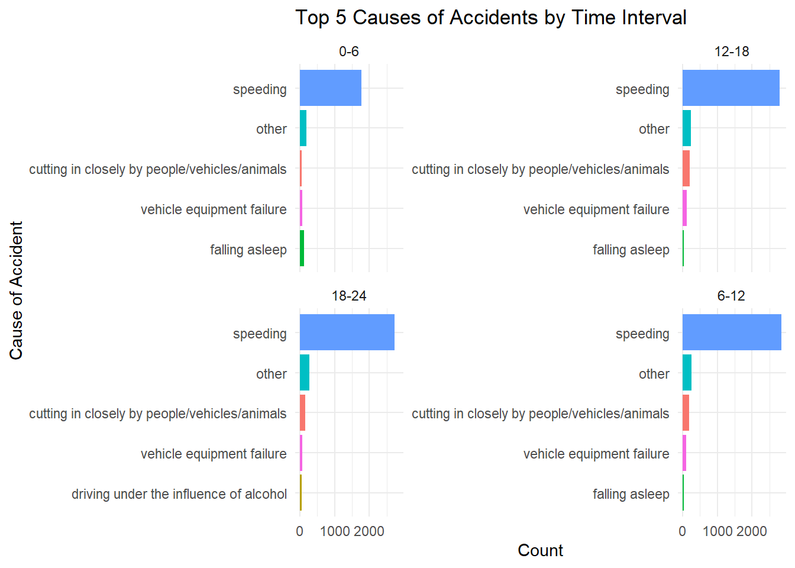
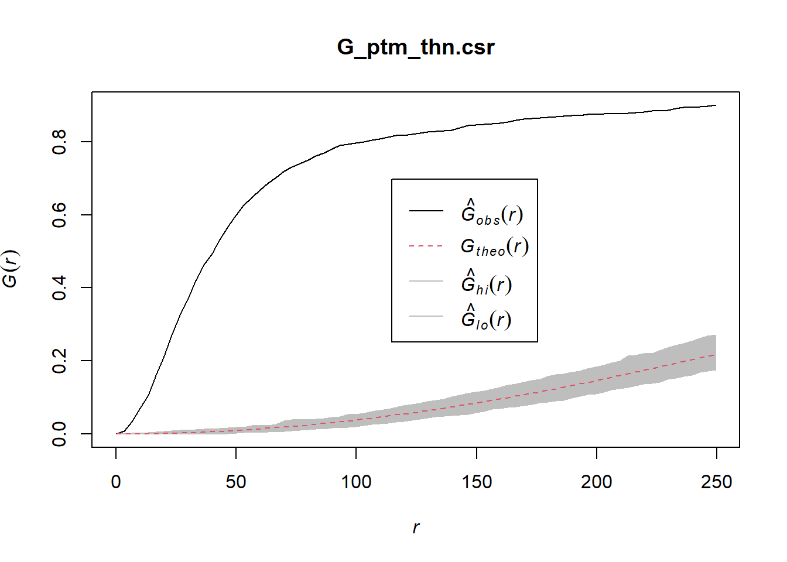
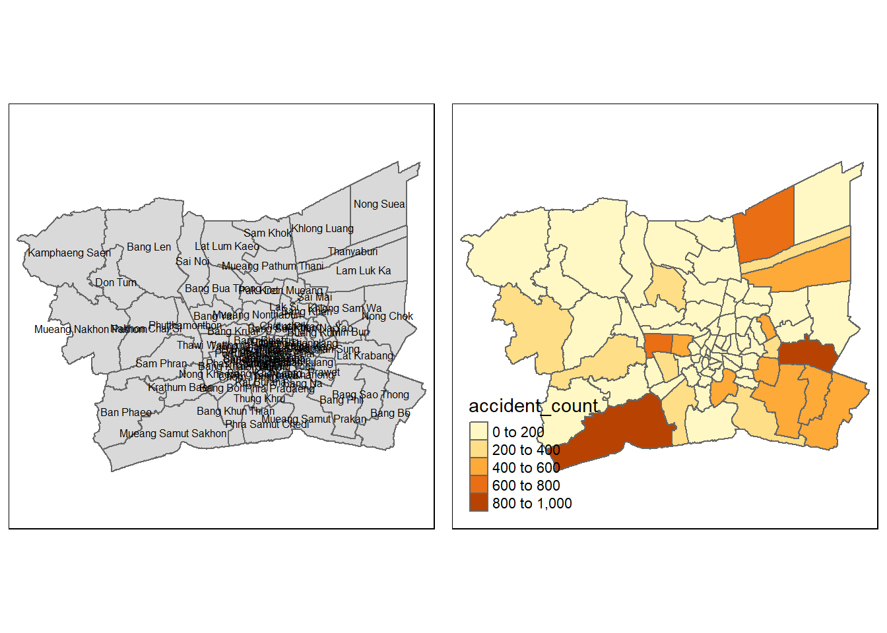
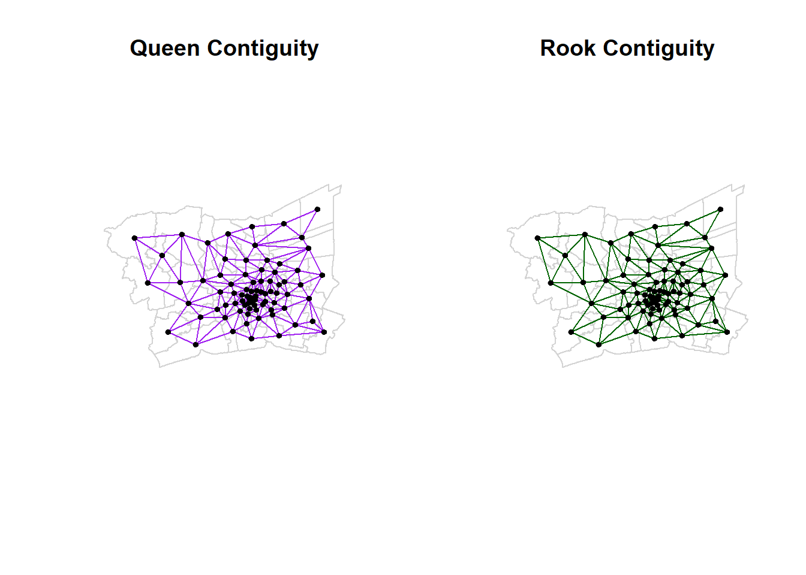

pacman::p_load(sf, spatstat, raster, tidyverse, tmap, spNetwork, spdep, knitr)
set.seed(123)Take Home Exercise 1
1 Introduction
According to the World Health Organisation (WHO), road traffic accidents cause approximately 1.19 million deaths annually and result in between 20 and 50 million people with being down with non-fatal injuries. Over half of all road traffic deaths occur among vulnerable road users, such as pedestrians, cyclists and motorcyclists.
Road traffic injuries are the leading cause of death for children and young adults aged 5–29 while two-thirds of road traffic fatalities occur among people of working age (18–59 years). 9 in 10 fatalities on the roads occur in low and middle-income countries, even though these countries have only around 60% of the world’s vehicles.
In addition to the human suffering caused by road traffic injuries, they also inflict a heavy economic burden on victims and their families, both through treatment costs for the injured and through loss of productivity of those killed or disabled. More broadly, road traffic injuries have a serious impact on national economies, costing countries 3% of their annual GDP.
Thailand’s roads are the deadliest in Southeast Asia and among the worst in the world, according to the World Health Organisation. About 20,000 people die in road accidents each year, or about 56 deaths a day (WHO).
Between 2014 and 2021, Thailand experienced a notable increase in accidents. Specifically, 19% of all accidents in Thailand occurred on the national highways, which constituted the primary public thoroughfares connecting various regions, provinces, districts, and significant locations within a comprehensive network.
Within the broader context of accidents across the country, there existed a considerable 66% likelihood of encountering accident-prone zones, often termed ‘black spots,’ distributed as follows: 66% on straight road segments, 13% at curves, 6% at median points of cross-shaped intersections, 5% at T-shaped intersections and Y-shaped intersections, 3% at cross-shaped intersections, 2% on bridges, and 2% on steep slopes, respectively.
1.1 Objectives
For the most part, road accidents can be attributed to two key factors- behavioral factors. such as driving skill, and environmental factors, such as heavy rain.
For this exercise, we will implement Spatial and Spatio-Temporal Point Pattern Analysis methods to discover the underlying factors behind the accidents in the Bangkok Metropolitan Region.
1.2 Data and Packages
For the purpose of this study, we will use the following three data-frames.
Thailand Road Accidents [2019-2022], sourced from Kaggle.
Thailand Roads Open Street Map Export, sourced from Humanitarian Data Exchange.
Thailand Subnational Administrative Boundaries sourced from Humanitarian Data Exchange.
You can click the link embedded on each of these data-frames to learn more.
We will use the following R packages for our analysis:
sf, a relatively new R package specially designed to import, manage and process vector-based geospatial data in R.spatstat, which has a wide range of useful functions for point pattern analysis. In this hands-on exercise, it will be used to perform 1st- and 2nd-order spatial point patterns analysis and derive kernel density estimation (KDE) layer.raster, which reads, writes, manipulates, analyses and model of gridded spatial data (i.e. raster). In this hands-on exercise, it will be used to convert image output generate by spatstat into raster format.tidyversesimplifies spatial analysis by offering a consistent and efficient framework that facilitates working with spatial data.tmapwhich provides functions for plotting cartographic quality static point patterns maps or interactive maps by using leaflet API.spNetworkwhich provides functions to perform Spatial Point Patterns Analysis such as kernel density estimation (KDE) and K-function on network. It also can be used to build spatial matrices (‘listw’ objects like in ‘spdep’ package) to conduct any kind of traditional spatial analysis with spatial weights based on reticular distances.
We import them into our environment using the code chunk below. The p_load() function of the pacman package is used for this.
Click to show/hide code chunk
We will now import the data-frames mentioned above into our environment. We save them as RDS files in the interest of computational efficiency.
1.2.1 Aspatial Data
We first import in the data-frame contained data of all accidents in the Bangkok Metropolitan Region. For this, we implement the read_rds() function as shown in the code chunk below.
rdacc_sf=read_rds("data/rds/acc_sf")%>%
mutate(hourofday= hour(incident_datetime))%>%
mutate(traffic_period = case_when(
# Define peak hours: 7-9 AM and 4-7 PM (16-19 in 24-hour format)
hourofday >= 7 & hourofday <= 9 ~ "Peak",
hourofday >= 16 & hourofday <= 19 ~ "Peak",
TRUE ~ "Off-Peak" # Everything else is off-peak
))
st_crs(rdacc_sf)Coordinate Reference System:
User input: EPSG:32647
wkt:
PROJCRS["WGS 84 / UTM zone 47N",
BASEGEOGCRS["WGS 84",
ENSEMBLE["World Geodetic System 1984 ensemble",
MEMBER["World Geodetic System 1984 (Transit)"],
MEMBER["World Geodetic System 1984 (G730)"],
MEMBER["World Geodetic System 1984 (G873)"],
MEMBER["World Geodetic System 1984 (G1150)"],
MEMBER["World Geodetic System 1984 (G1674)"],
MEMBER["World Geodetic System 1984 (G1762)"],
MEMBER["World Geodetic System 1984 (G2139)"],
ELLIPSOID["WGS 84",6378137,298.257223563,
LENGTHUNIT["metre",1]],
ENSEMBLEACCURACY[2.0]],
PRIMEM["Greenwich",0,
ANGLEUNIT["degree",0.0174532925199433]],
ID["EPSG",4326]],
CONVERSION["UTM zone 47N",
METHOD["Transverse Mercator",
ID["EPSG",9807]],
PARAMETER["Latitude of natural origin",0,
ANGLEUNIT["degree",0.0174532925199433],
ID["EPSG",8801]],
PARAMETER["Longitude of natural origin",99,
ANGLEUNIT["degree",0.0174532925199433],
ID["EPSG",8802]],
PARAMETER["Scale factor at natural origin",0.9996,
SCALEUNIT["unity",1],
ID["EPSG",8805]],
PARAMETER["False easting",500000,
LENGTHUNIT["metre",1],
ID["EPSG",8806]],
PARAMETER["False northing",0,
LENGTHUNIT["metre",1],
ID["EPSG",8807]]],
CS[Cartesian,2],
AXIS["(E)",east,
ORDER[1],
LENGTHUNIT["metre",1]],
AXIS["(N)",north,
ORDER[2],
LENGTHUNIT["metre",1]],
USAGE[
SCOPE["Navigation and medium accuracy spatial referencing."],
AREA["Between 96°E and 102°E, northern hemisphere between equator and 84°N, onshore and offshore. China. Indonesia. Laos. Malaysia - West Malaysia. Mongolia. Myanmar (Burma). Russian Federation. Thailand."],
BBOX[0,96,84,102]],
ID["EPSG",32647]]1.2.2 Geospatial Data
We import the OpenStreetMap export of Thailand into our environment using the st_read() function.
road_sf <- st_read(dsn = "data/rawdata", layer="hotosm_tha_roads_lines_shp")It is important to note the details shown in the output above. Most important takeaway from the above output is that there is no CRS information. This information is crucial as it informs our data preparation steps. We must ensure that the right CRS information is set in order to carry out analysis.
Below, we import the boundary data. map_sf is the boundary data at the province level (ADM1), while map2_sf is the boundary data at the district level (ADM2). We will be using both over the course of our analysis.
map_sf <- st_read(dsn = "data/rawdata", layer="tha_admbnda_adm1_rtsd_20220121")Reading layer `tha_admbnda_adm1_rtsd_20220121' from data source
`C:\arjxn11\ISSS626-GAA\Take-home_Ex\Take-home_Ex1\data\rawdata'
using driver `ESRI Shapefile'
Simple feature collection with 77 features and 16 fields
Geometry type: MULTIPOLYGON
Dimension: XY
Bounding box: xmin: 97.34336 ymin: 5.613038 xmax: 105.637 ymax: 20.46507
Geodetic CRS: WGS 84map2_sf <- st_read(dsn = "data/rawdata", layer="tha_admbnda_adm2_rtsd_20220121")Reading layer `tha_admbnda_adm2_rtsd_20220121' from data source
`C:\arjxn11\ISSS626-GAA\Take-home_Ex\Take-home_Ex1\data\rawdata'
using driver `ESRI Shapefile'
Simple feature collection with 928 features and 19 fields
Geometry type: MULTIPOLYGON
Dimension: XY
Bounding box: xmin: 97.34336 ymin: 5.613038 xmax: 105.637 ymax: 20.46507
Geodetic CRS: WGS 84After importing the boundary data, we notice immediately that the EPSG code isn’t accurate. The EPSG code of Thailand is 32647 while the data-frame has an EPSG code of 4326.
We use the st_transform() function to convert the EPSG code to the correct value of 32647.
map_sf=st_transform(map_sf,crs = 32647)
map2_sf=st_transform(map2_sf,crs = 32647)Given that the OSM data-frame has no CRS information, we will first initialize it to WGS84 using the default EPSG code of 4326 by using the st_set_crs() function of the sf package.
road_sf=st_set_crs(road_sf, 4326)We will then implement the st_crs() function to verify if the boundary data has the accurate CRS information after we transformed it above.
st_crs(map_sf)Coordinate Reference System:
User input: EPSG:32647
wkt:
PROJCRS["WGS 84 / UTM zone 47N",
BASEGEOGCRS["WGS 84",
ENSEMBLE["World Geodetic System 1984 ensemble",
MEMBER["World Geodetic System 1984 (Transit)"],
MEMBER["World Geodetic System 1984 (G730)"],
MEMBER["World Geodetic System 1984 (G873)"],
MEMBER["World Geodetic System 1984 (G1150)"],
MEMBER["World Geodetic System 1984 (G1674)"],
MEMBER["World Geodetic System 1984 (G1762)"],
MEMBER["World Geodetic System 1984 (G2139)"],
ELLIPSOID["WGS 84",6378137,298.257223563,
LENGTHUNIT["metre",1]],
ENSEMBLEACCURACY[2.0]],
PRIMEM["Greenwich",0,
ANGLEUNIT["degree",0.0174532925199433]],
ID["EPSG",4326]],
CONVERSION["UTM zone 47N",
METHOD["Transverse Mercator",
ID["EPSG",9807]],
PARAMETER["Latitude of natural origin",0,
ANGLEUNIT["degree",0.0174532925199433],
ID["EPSG",8801]],
PARAMETER["Longitude of natural origin",99,
ANGLEUNIT["degree",0.0174532925199433],
ID["EPSG",8802]],
PARAMETER["Scale factor at natural origin",0.9996,
SCALEUNIT["unity",1],
ID["EPSG",8805]],
PARAMETER["False easting",500000,
LENGTHUNIT["metre",1],
ID["EPSG",8806]],
PARAMETER["False northing",0,
LENGTHUNIT["metre",1],
ID["EPSG",8807]]],
CS[Cartesian,2],
AXIS["(E)",east,
ORDER[1],
LENGTHUNIT["metre",1]],
AXIS["(N)",north,
ORDER[2],
LENGTHUNIT["metre",1]],
USAGE[
SCOPE["Navigation and medium accuracy spatial referencing."],
AREA["Between 96°E and 102°E, northern hemisphere between equator and 84°N, onshore and offshore. China. Indonesia. Laos. Malaysia - West Malaysia. Mongolia. Myanmar (Burma). Russian Federation. Thailand."],
BBOX[0,96,84,102]],
ID["EPSG",32647]]1.2.3 Data Preparation and Wrangling
Given our area of interest is the Bangkok Metropolitan Region, we create a list of all provinces in this area in order to facilitate filtering for our analysis.
bmr_province=c("Bangkok", "Samut Prakan", "Samut Sakhon", "Nonthaburi", "Nakhon Pathom", "Pathum Thani")Below, we implement the filter() function in order to filter the boundary data, at the province and district level, as well as the accident data, down to our region of interest- the Bangkok Metropolitan Region.
bmr_boundary=map_sf %>%
filter(ADM1_EN %in% bmr_province)
bmr_boundary2=map2_sf %>%
filter(ADM1_EN %in% bmr_province)
bmr_accsf=rdacc_sf %>%
filter(province_en %in% bmr_province)st_bbox(bmr_boundary) xmin ymin xmax ymax
587893.5 1484413.7 712440.5 1579076.3 We now implement the st_crs() function in order to transform the EPSG code of the road_sf data-frame from 4326 to 32647. This allows us to have the accurate geometry values to facilitate future spatial joins, as well as analysis.
# If road_sf was originally in EPSG:4326, reproject it properly
road_sf <- st_transform(road_sf, crs = 32647)After ensuring that the CRS values are consistent, we can proceed with implementing the st_intersection() function and join the two data-frames based on their geometries.
The st_intersection() function is applied at the province level below.
bmr_roads=st_intersection(map2_sf, road_sf)As earlier, we will save this as an RDS file in order to improve computational efficiency.
write_rds(bmr_roads, "data/rds/bmrroads")bmr_roads=read_rds("data/rds/bmrroads")Below, the st_intersection() function is applied at the district level and saved as an RDS file.
bmr_districts=st_intersection(map2_sf, bmr_roads)
write_rds("data/rds/bmr_districts_roads")bmr_districts=read_rds("data/rds/bmr_districts_roads")1.3 Exploratory Data Analysis
To start of our analysis, we will first create a simple bar plot using the ggplot2 package to visualize the number of accidents per province.
# Step 1: Summarize the number of accidents per province
accident_summary <- bmr_accsf %>%
group_by(province_en) %>%
summarize(total_accidents = n())
# Step 2: Visualize using ggplot2
ggplot(accident_summary, aes(x = reorder(province_en, total_accidents), y = total_accidents)) +
geom_bar(stat = "identity", fill = "darkred") +
coord_flip() + # Flip coordinates for better readability if many provinces
labs(title = "Total Accidents by Province",
x = "Province",
y = "Number of Accidents") +
theme_minimal()Bangkok appears to have the most accidents followed by Samut Prakan.
Below, we use the tmap package to plot a highly cartographic map to verify the above information. We also use a basemap, thanks to OpenStreetMap, to be able to understand further where accidents occur.
This interactive map allows us to click on a point and identify the reason for the accident, the time, the month amongst other factors.
# Set tmap to interactive view mode (optional for exploration)
tmap_mode("plot")
# Create the map with boundaries and accident points
tm_shape(bmr_boundary2) +
tm_borders(col = "black") + # Show the boundaries
tm_shape(bmr_accsf) +
tm_dots(col = "red", size = 0.01) + # Show accident points as red dots
tm_layout(frame = FALSE, legend.outside = TRUE)# Switch back to static mode after rendering (if needed)
tmap_mode("plot")From the map above, we can infer the Eastern and South-Eastern region seems to have a high concentration of road accidents. We will verify if this is true using Spatial Analysis techniques later on in this exercise.
There appears to be a significant amount of rollover/driving off the curve accidents on curvy roads, especially when it is rainy.
We further break it down and produce a hexagonal choropleth map to gain a more in-depth understanding of the distribution of accidents across the region.
Below, we start by initializing a variable grid_size (2000 meters), and then use the st_make_grid() function of the sf package to create a grid that covers our region of interest. After creating the grid, we will convert to an sf data-frame using the st_sf() function and then ensure that we only have hexagons within the region of interest by implementing the st_intersection() function.
grid_size <- 2000 # Size of the grid cells in meters (adjust as necessary)
# Create a hexagonal grid covering the BMR boundary
bmr_hex_grid <- st_make_grid(bmr_boundary, cellsize = grid_size, square = FALSE)
# Convert to an sf object and clip to the BMR boundary
bmr_hex_grid_sf <- st_sf(geometry = bmr_hex_grid)
bmr_hex_grid_sf <- st_intersection(bmr_hex_grid_sf, bmr_boundary)We can create the map using functions of the tmap() package.
# Count accidents in the hexagonal grid
accidents_in_hex_grid <- st_join(bmr_hex_grid_sf, bmr_accsf) %>%
group_by(geometry) %>%
summarise(accident_count = n())
# Create a polygon heatmap using tmap for the hexagonal grid
tm_shape(accidents_in_hex_grid) +
tm_polygons("accident_count",
palette = "Blues",
title = "Accident Count (Hexagonal Grid)") +
tm_layout(title = "Accident Heatmap (Hexagonal Grid)",
legend.outside = TRUE)We see above that the Eastern, especially towards Samut Prakan, region of the Bangkok Metropolitan region sees more accidents than the rest of the region. These hotspots are areas of interest and roads and speeding laws in these area must be looked at in greater detail and improved.
We will now implement the ggplot2 package to compare the number of accidents in the peak period vs the off-peak period in Bagnkok.
# Count the number of accidents in Peak and Off-Peak periods
accident_counts_summary <- bmr_accsf %>%
group_by(traffic_period) %>%
summarise(accident_count = n())
# Create a bar chart showing the number of accidents in Peak vs Off-Peak
ggplot(data = accident_counts_summary, aes(x = traffic_period, y = accident_count)) +
geom_bar(stat = "identity", fill = "steelblue") + # Bar chart with specified accident counts
labs(title = "Number of Accidents: Peak vs Off-Peak",
x = "Traffic Period",
y = "Number of Accidents") +
theme_minimal() +
theme(plot.title = element_text(hjust = 0.5)) # Center the titleOff-peak hours (Midnight to 7AM, 9AM to 4PM, 7PM to Midnight) sees more accidents in total.
We now move on and create a data-frame containing the count of the causes of each accident in the region.
cause_count <- bmr_accsf %>%
group_by(presumed_cause) %>%
summarise(count = n()) We can implement functions of the ggplot2 package to create a bar plot.
# Filter the top 5 causes
top_5_causes <- cause_count %>%
top_n(5, count)
# Create the bar chart showing only the top 5 presumed causes
ggplot(top_5_causes, aes(x = reorder(presumed_cause, -count), y = count)) +
geom_bar(stat = "identity", fill = "skyblue", color = "black") +
geom_text(aes(label = count), vjust = -0.5) + # Add labels to show the count on top of the bars
theme_minimal() +
labs(title = "Top 5 Presumed Causes of Accidents",
x = "Presumed Cause",
y = "Accident Count") +
theme(axis.text.x = element_text(angle = 45, hjust = 1)) Speeding appears to be the primary cause of accidents, responsible for over 80% of all road accidents in the Bangkok Metropolitan Region.
We now convert the sf data-frames into spatial objects to store in our environment to facilitate future spatial analysis. We implement the as_Spatial() function of the sf package for this. We will then write large files as rds files in the interest of computational efficiency.
bmr_acc <- as_Spatial(bmr_accsf)
bmr <- as_Spatial(bmr_boundary)write_rds(osm_data, "data/rds/osm_data_spatial")osm_data=read_rds("data/rds/osm_data_spatial")We now convert the above obtain spatial object into Spatial Point and Spatial Polygon form respectively based on their geometry.
bmracc_sp <- as(bmr_acc, "SpatialPoints")
boundary_sp <- as(bmr, "SpatialPolygons")Now, we want to determine the road type that has the most accidents.
For this, we create a buffer first as accidents don’t always happen directly on the road but just off it using the st_buffer() function. A buffer of 5 meters is created.
After that, we can perform a spatial join using the st_join() function of the sf package.
# Create a small buffer around the accident points (e.g., 50 meters)
accidents_buffered = st_buffer(bmr_accsf, dist = 10)
# Perform the spatial join again with the buffered accident points
accidents_on_roads = st_join(accidents_buffered, bmr_roads, join = st_intersects)
head(accidents_on_roads)Simple feature collection with 6 features and 51 fields
Geometry type: POLYGON
Dimension: XY
Bounding box: xmin: 627002.3 ymin: 1531930 xmax: 655421.7 ymax: 1533391
Projected CRS: WGS 84 / UTM zone 47N
# A tibble: 6 × 52
acc_code incident_datetime report_datetime province_th province_en
<dbl> <dttm> <dttm> <chr> <chr>
1 571882 2019-01-01 02:25:00 2019-01-02 17:32:00 นครปฐม Nakhon Pathom
2 571882 2019-01-01 02:25:00 2019-01-02 17:32:00 นครปฐม Nakhon Pathom
3 571882 2019-01-01 02:25:00 2019-01-02 17:32:00 นครปฐม Nakhon Pathom
4 571882 2019-01-01 02:25:00 2019-01-02 17:32:00 นครปฐม Nakhon Pathom
5 600001 2019-01-01 03:00:00 2019-01-05 10:33:00 นนทบุรี Nonthaburi
6 600001 2019-01-01 03:00:00 2019-01-05 10:33:00 นนทบุรี Nonthaburi
# ℹ 47 more variables: agency <chr>, route <chr>, vehicle_type <chr>,
# presumed_cause <chr>, accident_type <chr>,
# number_of_vehicles_involved <dbl>, number_of_fatalities <dbl>,
# number_of_injuries <dbl>, weather_condition <chr>, road_description <chr>,
# slope_description <chr>, geometry <POLYGON [m]>, Month <dbl>,
# Month_fac <ord>, dayofmonth <int>, hourofday <int>, traffic_period <chr>,
# Shape_Leng <dbl>, Shape_Area <dbl>, ADM1_EN <chr>, ADM1_TH <chr>, …We now count the number of accidents on each highway type by implementing the code chunk below.
# Count accidents by road type
accidents_by_road_type = accidents_on_roads %>%
group_by(highway) %>% # Assuming the OSM roads data has a 'road_type' column
summarise(accident_count = n())
# View the summary
print(accidents_by_road_type)Simple feature collection with 20 features and 2 fields
Geometry type: MULTIPOLYGON
Dimension: XY
Bounding box: xmin: 591267.5 ymin: 1486836 xmax: 710176.1 ymax: 1576530
Projected CRS: WGS 84 / UTM zone 47N
# A tibble: 20 × 3
highway accident_count geometry
<chr> <int> <MULTIPOLYGON [m]>
1 construction 1217 (((629789.3 1496006, 629789.1 1496005, 629788.…
2 cycleway 8 (((665707.4 1532883, 665707.3 1532882, 665707.…
3 footway 218 (((627989 1495786, 627988.8 1495786, 627988.6 …
4 motorway 5366 (((661514.4 1506189, 661514 1506189, 661513.7 …
5 motorway_link 939 (((664470.2 1506809, 664469.9 1506809, 664469.…
6 path 16 (((664563 1509817, 664562.5 1509817, 664562 15…
7 primary 2959 (((617714.5 1511678, 617714.2 1511678, 617713.…
8 primary_link 484 (((626402.2 1497350, 626401.9 1497350, 626401.…
9 residential 552 (((616749.7 1492543, 616749.4 1492542, 616749.…
10 secondary 2815 (((621676.4 1492259, 621676.1 1492259, 621675.…
11 secondary_link 329 (((637728 1498891, 637727.8 1498890, 637727.5 …
12 service 723 (((617727.2 1487698, 617726.9 1487698, 617726.…
13 steps 39 (((637789.9 1501257, 637789.8 1501256, 637789.…
14 tertiary 411 (((616694.7 1490301, 616694.5 1490301, 616694.…
15 tertiary_link 9 (((683966 1504996, 683965.9 1504995, 683965.8 …
16 track 4 (((682585.7 1518975, 682585.6 1518975, 682585.…
17 trunk 2897 (((603768.7 1525407, 603768.4 1525406, 603768 …
18 trunk_link 289 (((639960.7 1500837, 639960.5 1500837, 639960.…
19 unclassified 122 (((622943.8 1491550, 622943.6 1491550, 622943.…
20 <NA> 953 (((616483.2 1486841, 616482.9 1486841, 616482.…top_5_highway=accidents_by_road_type %>%
arrange(desc(accident_count))%>%
slice(1:5)We will now use the ggplot2 package to produce a barplot to facilitate visualization and understand what type of highways result in the most accidents.
library(ggplot2)
# Create bar plot
ggplot(top_5_highway, aes(x = highway, y = accident_count, fill = highway)) +
geom_bar(stat = "identity") +
labs(title = "Accident Count by highway Type", x = "Highway Type", y = "Number of Accidents") +
theme_minimal()We will now single out the motorway to further determine what type of accidents are most common on them.
# Filter for motorway and count causes of accidents
motorway_accidents_cause_count <- accidents_on_roads %>%
filter(highway == "motorway") %>%
group_by(presumed_cause) %>%
summarise(count = n()) %>%
arrange(desc(count)) %>% # Sort by count in descending order
slice(1:5) # Select top 5 causes
# Create a bar plot for the top 5 causes of accidents on motorways
ggplot(motorway_accidents_cause_count, aes(x = reorder(presumed_cause, count), y = count, fill = presumed_cause)) +
geom_bar(stat = "identity") +
coord_flip() + # Flip the axes for better readability
labs(title = "Top 5 Causes of Accidents on Motorways",
x = "Accident Cause",
y = "Count") +
theme_minimal() +
theme(legend.position = "none") # Hide legendSpeeding seems to be by far the most common reason for road accidents across the region.
The best way to deal with this would be the installation of more speed cameras and harsher penalties, in the form of larger fines, for failing to adhere to regulations.
Currently, fines for speeding can be up to 4000B. Increasing this fine would be prudent and help reduce the amount of speeding accidents on motorways and across the region in general.
Now we analyze the accident types based on weather and time of day see if there are any changes based on changes in either factor. We will use the ggplot2 package for this.
# Step 1: Create time intervals for hour of day
accidents <- bmr_accsf %>%
mutate(time_interval = case_when(
hourofday >= 0 & hourofday < 6 ~ "0-6",
hourofday >= 6 & hourofday < 12 ~ "6-12",
hourofday >= 12 & hourofday < 18 ~ "12-18",
hourofday >= 18 & hourofday <= 24 ~ "18-24"
))
# Group and count the causes of accidents by time interval
top_5_time <- accidents %>%
group_by(time_interval, presumed_cause) %>%
summarise(count = n()) %>%
arrange(desc(count)) %>%
group_by(time_interval) %>%
top_n(5, wt = count) # Get top 5 causes for each time interval
# Plot for time intervals
ggplot(top_5_time, aes(x = reorder(presumed_cause, count), y = count, fill = presumed_cause)) +
geom_bar(stat = "identity", position = "dodge") +
coord_flip() + # Flip the coordinates for better readability
facet_wrap(~ time_interval, scales = "free_y") +
labs(title = "Top 5 Causes of Accidents by Time Interval",
x = "Cause of Accident", y = "Count") +
theme_minimal() +
theme(legend.position = "none")
There doesn’t seem to be a significant difference based on the different time periods of the day.
# Group and count the causes of accidents by weather
top_5_weather <- bmr_accsf %>%
group_by(weather_condition, presumed_cause) %>%
summarise(count = n()) %>%
arrange(desc(count)) %>%
ungroup() %>%
top_n(5, wt = count) # Get the top 5 causes overall (not grouped by weather)
# Plot for all weather conditions
ggplot(top_5_weather, aes(x = weather_condition, y = count, fill = presumed_cause)) +
geom_bar(stat = "identity", position = "dodge") +
labs(title = "Top 5 Causes of Accidents Across All Weather Conditions",
x = "Weather Condition", y = "Count") +
theme_minimal() +
theme(legend.position = "bottom") # Place legend at the bottomSpeeding, unsurprisingly, is the primary reason for road accidents. However, we see far more instances of accidents in clear conditions.
1.4 Spatial Analysis
1.4.1 Kernel Density Estimation (KDE)
KDE will allow us to better estimate the distribution of accidents acrosss the Bangkok Metropolitan Region. Using this, we can make more informed decisions on where to focus resources on to reduce the rate of accidents across the region.
We start off by preparing the data for KDE.
# Step 3: Define the window (bounding box) from the boundary
boundary_bbox <- bbox(boundary_sp) # Get bounding box of boundary
window <- owin(xrange = boundary_bbox[1, ], yrange = boundary_bbox[2, ]) # Define window
# Step 4: Extract the coordinates from the SpatialPoints object
coordinates <- coordinates(bmracc_sp)
# Step 5: Convert the SpatialPoints into a ppp object using the window
bmracc_ppp <- ppp(x = coordinates[,1], y = coordinates[,2], window = window)
# Step 6: Check the structure of the resulting point pattern object
summary(bmracc_ppp)Planar point pattern: 12986 points
Average intensity 1.101448e-06 points per square unit
*Pattern contains duplicated points*
Coordinates are given to 10 decimal places
Window: rectangle = [587893.5, 712440.5] x [1484413.7, 1579076.3] units
(124500 x 94660 units)
Window area = 11789900000 square units# You can now use the ppp object for spatial analysis with spatstatNote that you must ensure to convert the spatial objects into ppp (planar point pattern) form before proceeding with Kernel Density Estimation. The spatstat package requires data to be in this format before conducting point pattern analysis. This also improves computational efficiency.
1.4.1.1 Dealing with Duplicates
After creating the above PPP object, we check for duplicates by implementing the code chunk below.
any(duplicated(bmracc_ppp))[1] TRUEWe check the number of duplicates in our data-frame using the code chunk below. The multiplicity() function creates a list of all duplicates after which the sum() function counts the total.
sum(multiplicity(bmracc_ppp)>1)[1] 2293There are over 2293 duplicates. In this case, it means we have 2293 overlapping data points.
Using the rjitter() function, we deal with these data points by spacing them out slightly around the point. The function adds noise to the data and spreads these points out a little to facilitate visualization.
bmr_ppp_jit <- rjitter(bmracc_ppp,
retry=TRUE,
nsim=1,
drop=TRUE)1.4.1.2 Creating an owin object
When analyzing Spatial Point patterns, it is a good practice to confine the boundaries of the analysis with a Geographical area, such as Singapore’s boundary. Using the spatstat package, we can create an owin object that is designed to represent such polygonal regions.
We use the as.owin() function as shown in the code chunk below.
bmr_owin <- as.owin(bmr_boundary)We use the plot() function to verify if the owin object has been correctly created.
plot(bmr_owin)
1.4.1.3 Computing KDE using automatic bandwidth selection
We use the density() function of the spatstat package to compute the kernel density. These are the key configurations used in the computation:
bw.diggle() automatic bandwidth selection method.
The smoothing kernel used in this instance is gaussian. Other smoothing methods include “epanechnikov”, “quartic”. or “disc”.
kde_bmracc_bw <- density(bmr_ppp_jit,
sigma=bw.diggle,
edge=TRUE,
kernel="gaussian") The other two methods aside from bw.diggle() are bw.scott() and bw.ppl(). While bw.diggle() focuses on minimizing error in spatial density estimation for point process data and is tailor-made for spatial applications, bw.scott() (Scott’s rule) provides a rule-of-thumb bandwidth and is used in several KDE applications across different types of data besides just spatial data. bw.ppl() uses a more complex and data-driven approach (plug-in) for selecting the bandwidth, aiming to minimize the error in KDE. Like bw.diggle(), It is also tailor-made for spatial point processes, however, it takes a slightly different approach to bw.diggle()
We will now plot the above using the plot() function.
plot(kde_bmracc_bw)
Immediately we notice that the density values are very small. This is because the unit of measurement is in meter, meaning that the density values are computed with a unit of ‘number of points per square meter.’
We now use the rescale.ppp() function of the spatstat package to convert the unit of measurement from meter to kilometer. This is done by implementing the code chunk below.
bmracc_ppp.km <- rescale.ppp(bmr_ppp_jit, 1000, "km")After this, we re-deploy the density() function using the re-scaled data and plot the KDE map.
kde_bmracc.bw <- density(bmracc_ppp.km,
sigma=bw.diggle,
edge=TRUE,
kernel="gaussian")
plot(kde_bmracc.bw)1.4.1.4 Converting the KDE output into a grid object
1.4.1.4.1 Gridded raster
We convert the gridded kernel density objects into RasterLayer object by using raster() of the raster package.
kde_bmracc_bw_raster <- raster(kde_bmracc.bw)The CRS above is NA, so we now set the CRS to EPSG 32647 of Thailand.
After that, we can implement the plot() function to plot the same.
projection(kde_bmracc_bw_raster) <- CRS("+init=EPSG:32647")
plot(kde_bmracc_bw_raster)From the above, we infer that the South-East region, specifically districts around the Samut Prakan province seem to have a higher density of accidents.
1.4.2 Second-Order Spatial Point Pattern Analysis.
We now focus on Second Order Spatial Point Patterns Analysis.
We first filter the data down to the regions of interest and create separate boundaries for each of them. Following this, we produce an owin object using the as.owin() function.
# Filtering the data down to the regions of interest
bkk = bmr_boundary %>%
filter(ADM1_EN == "Bangkok")
smt_pkn = bmr_boundary %>%
filter(ADM1_EN == "Samut Prakan")
ntbr = bmr_boundary %>%
filter(ADM1_EN == "Nonthaburi")
nkn_ptn= bmr_boundary %>%
filter(ADM1_EN == "Nakhon Pathom")
smt_skn= bmr_boundary %>%
filter(ADM1_EN == "Samut Sakhon")
# Creating the owin object
bkk_owin = as.owin(bkk)
smt_pkn_owin = as.owin(smt_pkn)
ntbr_owin = as.owin(ntbr)
nkn_ptn_owin = as.owin(nkn_ptn)
smt_skn_owin = as.owin(smt_skn)
#Creating point planar patterns
acc_bkk_ppp = bmr_ppp_jit[bkk_owin]
acc_smt_pkn_ppp = bmr_ppp_jit[smt_pkn_owin]
acc_ntbr_ppp = bmr_ppp_jit[ntbr_owin]
acc_nkn_ptn_ppp = bmr_ppp_jit[nkn_ptn_owin]
acc_smt_skn_ppp= bmr_ppp_jit[smt_skn_owin]1.4.2.1 Calculating G-function estimates and testing for Complete Spatial Randomness
We now focus on computing G-function estimates.
The test below allows us to understand if accidents in the Bangkok Metropolitan Region exhibit Spatial Clustering or if they are Randomly Distributed.
We apply the test for Complete Spatial Randomness to each region individually. The tests are conducted at a 5% significance level.
The hypotheses are as follows.
H0: There is no spatial clustering. The accidents are randomly distributed across the region.
H1: There is spatial clustering. The accidents are NOT randomly distributed across the region.
We use the Gest() function of the spatstat package to compute a G-function estimation for Bangkok. Following that, we plot the result.
G_bkk = Gest(acc_bkk_ppp, correction = "border")
plot(G_bkk, xlim=c(0,500))
We now carry out the monte carlo simulation test, using the envelope() function, for complete spatial randomness.
G_bkk.csr <- envelope(acc_bkk_ppp, Gest, nsim = 99)Generating 99 simulations of CSR ...
1, 2, 3, 4, 5, 6, 7, 8, 9, 10, 11, 12, 13, 14, 15, 16, 17, 18, 19, 20,
21, 22, 23, 24, 25, 26, 27, 28, 29, 30, 31, 32, 33, 34, 35, 36, 37, 38, 39, 40,
41, 42, 43, 44, 45, 46, 47, 48, 49, 50, 51, 52, 53, 54, 55, 56, 57, 58, 59, 60,
61, 62, 63, 64, 65, 66, 67, 68, 69, 70, 71, 72, 73, 74, 75, 76, 77, 78, 79, 80,
81, 82, 83, 84, 85, 86, 87, 88, 89, 90, 91, 92, 93, 94, 95, 96, 97, 98,
99.
Done.plot(G_bkk.csr)It is clear that that there is clustering exhibited in this scenario as the black line, observed values, is far above the envelope. We have sufficient evidence to reject the null hypothesis.
We use the Gest() function of the spatstat package to compute a G-function estimation for Samut Prakhan. Following that, we plot the result.
G_smt_pkn = Gest(acc_smt_pkn_ppp, correction = "border")
plot(G_smt_pkn, xlim=c(0,500))
We now implement a monte carlo simulation test, using the envelope() function, for Complete Spatial Random in Samut Prakan.
G_smt_pkn.csr <- envelope(acc_smt_pkn_ppp, Gest, nsim = 199)Generating 199 simulations of CSR ...
1, 2, 3, 4.6.8.10.12.14.16.18.20.22.24.26.28.30.32.34
.36.38.40.42.44.46.48.50.52.54.56.58.60.62.64.66.68.70.72.74
.76.78.80.82.84.86.88.90.92.94.96.98.100.102.104.106.108.110.112.114
.116.118.120.122.124.126.128.130.132.134.136.138.140.142.144.146.148.150.152.154
.156.158.160.162.164.166.168.170.172.174.176.178.180.182.184.186.188.190.192.194
.196.198
199.
Done.plot(G_smt_pkn.csr)
We once again have sufficient evidence to reject the null hypothesis and conclude that accidents in Samut Prakan do indeed exhibit clustering, more so than is expected in a region that is randomly distributed.
We use the Gest() function of the spatstat package to compute a G-function estimation for Nonthaburi. Following that, we plot the result.
G_ntbr = Gest(acc_ntbr_ppp, correction = "border")
plot(G_ntbr, xlim=c(0,500))
We now implement a Monte-Carlo Simulation test, using the envelope() function, to check for complete spatial randomness of roads accidents in Nonthaburi.
G_ntbr.csr <- envelope(acc_ntbr_ppp, Gest, nsim = 199)Generating 199 simulations of CSR ...
1, 2, 3, 4.6.8.10.12.14.16.18.20.22.24.26.28.30.32.34
.36.38.40.42.44.46.48.50.52.54.56.58.60.62.64.66.68.70.72.74
.76.78.80.82.84.86.88.90.92.94.96.98.100.102.104.106.108.110.112.114
.116.118.120.122.124.126.128.130.132.134.136.138.140.142.144.146.148.150.152.154
.156.158.160.162.164.166.168.170.172.174.176.178.180.182.184.186.188.190.192.194
.196.198
199.
Done.plot(G_ntbr.csr)
We once again have sufficient evidence to reject the null hypothesis and conclude that accidents in Nonthaburi do indeed exhibit clustering, more than is expected in a region that is randomly distributed.
We use the Gest() function of the spatstat package to compute a G-function estimation for Nakhon Pathom. Following that, we plot the result.
G_nkn_ptn = Gest(acc_nkn_ptn_ppp, correction = "border")
plot(G_nkn_ptn, xlim=c(0,500))
We now conduct the Monte-Carlo Simulation test, using the envelope() function, for complete spatial randomness for accidents in Nakhon Pathom.
G_nkn_ptn.csr <- envelope(acc_nkn_ptn_ppp, Gest, nsim = 199)Generating 199 simulations of CSR ...
1, 2, 3, 4.6.8.10.12.14.16.18.20.22.24.26.28.30.32.34
.36.38.40.42.44.46.48.50.52.54.56.58.60.62.64.66.68.70.72.74
.76.78.80.82.84.86.88.90.92.94.96.98.100.102.104.106.108.110.112.114
.116.118.120.122.124.126.128.130.132.134.136.138.140.142.144.146.148.150.152.154
.156.158.160.162.164.166.168.170.172.174.176.178.180.182.184.186.188.190.192.194
.196.198
199.
Done.plot(G_nkn_ptn.csr)
We once again have sufficient evidence to reject the null hypothesis and conclude that accidents in Nakhon Pathom do indeed exhibit clustering, more than is expected in a region that is randomly distributed.
We use the Gest() function of the spatstat package to compute a G-function estimation for Samut Sakhon. Following that, we plot the result.
G_smt_skn = Gest(acc_smt_skn_ppp, correction = "border")
plot(G_smt_skn, xlim=c(0,500))
We now conduct the Monte-Carlo Simulation test, using the envelope() function, for complete spatial randomness for accidents in Samut Sakhon.
G_smt_skn.csr <- envelope(acc_smt_skn_ppp, Gest, nsim = 199)Generating 199 simulations of CSR ...
1, 2, 3, 4.6.8.10.12.14.16.18.20.22.24.26.28.30.32.34
.36.38.40.42.44.46.48.50.52.54.56.58.60.62.64.66.68.70.72.74
.76.78.80.82.84.86.88.90.92.94.96.98.100.102.104.106.108.110.112.114
.116.118.120.122.124.126.128.130.132.134.136.138.140.142.144.146.148.150.152.154
.156.158.160.162.164.166.168.170.172.174.176.178.180.182.184.186.188.190.192.194
.196.198
199.
Done.plot(G_smt_skn.csr)
We once again have sufficient evidence to reject the null hypothesis and conclude that accidents in Samut Sakhon do indeed exhibit clustering, more so than is expected in a region that is randomly distributed.
The grey zone indicates the confidence envelop (In this case, we have set it as 95% as indicated by the critical value of 0.05)
When an observed L value is greater than its corresponding L(theo) value for a particular distance and lower than the upper confidence envelop, spatial clustering for that distance is statistically NOT significant (e.g. distance between B and C).
When an observed L value is smaller than its corresponding L(theo) value for a particular distance and beyond the lower confidence envelop, spatial dispersion for that distance is statistically significant. - When an observed L value is smaller than its corresponding L(theo) value for a particular distance and within the lower confidence envelop, spatial dispersion for that distance is statistically NOT significant (e.g. distance between A and B).
1.4.3 Spatial Weights
We now create a data-frame, boundary_with_accident_count, in order to assign Spatial Weights and carry out further analysis.
We start off by conducting a spatial join with the help of the st_join() function of the sf package to join bmr_accsf, accident data of the Bangkok Metropolitan Region.
We then use the left_join() function of the dplyr package to join this with the boundary data in order to facilitate analysis.
We then save it as an RDS file.
accidents_with_districts <- st_join(bmr_accsf, bmr_boundary2, join = st_intersects)
# Group by adm2_en and count the number of accidents per district
accident_counts_by_adm2 <- accidents_with_districts %>%
group_by(ADM2_EN) %>%
summarise(accident_count = n())
# Perform a left join with the boundary data
boundary_with_accident_count <- bmr_boundary2 %>%
st_join(accident_counts_by_adm2, by = "ADM2_EN")
boundary_with_accident_count <- boundary_with_accident_count %>%
mutate(accident_count = ifelse(is.na(accident_count), 0, accident_count))
write_rds(boundary_with_accident_count, "data/rds/boundary_with_acc_count")boundary_with_accident_count=read_rds("data/rds/boundary_with_acc_count")After successfully completing the relational join, we can now plot a choropleth map to visualize the number of accidents in the Bangkok Metropolitan Region using various functions of the tmap package
basemap <- tm_shape(boundary_with_accident_count) +
tm_polygons() +
tm_text("ADM2_EN.x", size=0.5)
gdppc <- qtm(boundary_with_accident_count, "accident_count")
tmap_arrange(basemap, gdppc, asp=1, ncol=2)
The above map reinforces our earlier finding that the Eastern/South-Eastern region of the Bangkok Metropolitan Region have the most accidents. One district in the bottom left, part of the Samut Sakhon province, also has a high volume of accidents.
1.4.3.1 Computing Contiguity Spatial Weights
We now implement the poly2nb() function of the spdep package to compute contiguity weight matrices for the study area selected.
Using this function, we are able to build a ‘neighbors list’ based on regions with contiguous boundaries.
In this function, we will pass an argument, ‘queen’, that can be set as either TRUE (default) or FALSE. If the ‘queen’ argument is not explicitly set to FALSE, the function returns a list of first order neighbors using the Queen criteria.
You may refer to the spdep package documentation here to learn more about its functions and arguments.
1.4.3.1.1 Computing (QUEEN) contiguity based neighbors
The poly2nb() function is implemented as shown in the code chunk below. Using this, we are able to compute a Queen contiguity weight matrix.
wm_q <- poly2nb(boundary_with_accident_count, queen=TRUE)
summary(wm_q)Neighbour list object:
Number of regions: 79
Number of nonzero links: 438
Percentage nonzero weights: 7.018106
Average number of links: 5.544304
Link number distribution:
2 3 4 5 6 7 8 9
1 5 10 24 20 12 6 1
1 least connected region:
66 with 2 links
1 most connected region:
30 with 9 linksThe most connected area has 9 neighbors. In general, most districts have approximately 5 to 6 neighbors.
1.4.3.1.2 Computing (ROOK) contiguity based neighbors
For this, we will set the queen argument of the poly2nb() function to false.
wm_r <- poly2nb(boundary_with_accident_count, queen=FALSE)
summary(wm_r)Neighbour list object:
Number of regions: 79
Number of nonzero links: 422
Percentage nonzero weights: 6.761737
Average number of links: 5.341772
Link number distribution:
2 3 4 5 6 7 8
1 5 16 20 22 11 4
1 least connected region:
66 with 2 links
4 most connected regions:
1 5 17 54 with 8 linksThe most connected area has 8 neighbors. In general, most districts have approximately 5 to 6 neighbors.
1.4.3.2 Visualizing contiguity weights
A connectivity graph takes a point and displays a line to each neighboring point. We are working with polygons in this situation, so we need to ensure that our points are in order to produce our connectivity graphs.
Usually, the method of choice will be polygon centroids. We calculate using the sf package before moving onto the graphs. Getting latitude and longitude of the Polygon Centroids.
We need points to associate with each polygon before we can make our connectivity graph. It won’t be as simple as applying the st_centroid() function of the sf sf object: us.bound. We need the coordinates in a separate data-frame for this to work.
To do this, we will use a mapping function which will apply a given function to each element of a vector and returns a vector of the same length. Our input vector will be the geometry column of us.bound.
The function that we implement in this situation will be st_centroid().
We will be using the map_dbl variation of map from the purrr package.
1.4.3.2.1 Obtaining Coordinate values
longitude <- map_dbl(boundary_with_accident_count$geometry, ~st_centroid(.x)[[1]])latitude <- map_dbl(boundary_with_accident_count$geometry, ~st_centroid(.x)[[2]])Now that we have the latitude and longitude values, we can use the cbind() function to put the longitude and latitude values into the same object, coords.
coords <- cbind(longitude, latitude)head(coords) longitude latitude
[1,] 661951.4 1521172
[2,] 664121.1 1523923
[3,] 700735.2 1532207
[4,] 664808.5 1518057
[5,] 676193.5 1533602
[6,] 677305.1 1522820We can now plot the contiguity weights side by side for comparison.
par(mfrow=c(1,2))
plot(boundary_with_accident_count$geometry, border="lightgrey", main="Queen Contiguity")
plot(wm_q, coords, pch = 19, cex = 0.6, add = TRUE, col= "purple")
plot(boundary_with_accident_count$geometry, border="lightgrey", main="Rook Contiguity")
plot(wm_r, coords, pch = 19, cex = 0.6, add = TRUE, col = "darkgreen")
Queen Contiguity creates more connections as seen above, as it considers both shared vertices AND edges. This results in a more dense network.
Rook Contiguity results in fewer connections as it only considers shared borders as opposed to Queen Contiguity. This results in a simpler network.
We often use these in order to proceed with Spatial Autocorrelation Analysis to understand the neighbors taken into consideration amongst other factors.
1.4.3.3 Adaptive Distance Weight Matrix
One of the characteristics of fixed distance weight matrices is that the more densely settled areas (usually urban areas) tend to have more neighbors and the less densely settled areas (usually rural areas) tend to have lesser neighbors.
Having many neighbors smoothens the neighbor relationship across more neighbors.
It is possible to control the numbers of neighbors directly using k-nearest neighbors by either accepting asymmetric neighbors or imposing symmetry
knn6 <- knn2nb(knearneigh(coords, k=6))
knn6Neighbour list object:
Number of regions: 79
Number of nonzero links: 474
Percentage nonzero weights: 7.594937
Average number of links: 6
Non-symmetric neighbours listWe immediately see a difference when comparing the above output to wm_q and wm_r. The number of non-zero links is higher.
We can create the plot for the same using the plot() function.
plot(boundary_with_accident_count$geometry, border="lightgrey")
plot(knn6, coords, pch = 19, cex = 0.6, add = TRUE, col = "red")1.4.3.4 Row standardized weights matrix
1.4.3.4.1 Weights Based on Inversed Distance Weighting (IDW)
We first compute the distances between areas by implementing the nbdists() function of the spdep package.
dist <- nbdists(wm_q, coords, longlat = FALSE)
ids <- lapply(dist, function(x) 1/(x))
ids[[1]]
[1] 0.0002854535 0.0006582134 0.0004566217 0.0002167536 0.0003080119
[6] 0.0002757322 0.0003371576 0.0002806965
[[2]]
[1] 0.0002854535 0.0002055287 0.0003012437 0.0003439200 0.0003703229
[6] 0.0002193608 0.0001383976 0.0002982074
[[3]]
[1] 8.230456e-05 7.194802e-05 7.691011e-05 6.386761e-05
[[4]]
[1] 0.0005397094 0.0003348823 0.0004742967 0.0004145926 0.0006228750
[[5]]
[1] 1.466707e-04 1.197978e-04 1.317261e-04 1.901079e-04 1.449448e-04
[6] 2.005737e-04 1.397857e-04 8.481219e-05
[[6]]
[1] 0.0001622765 0.0002212846 0.0002009303 0.0001431074 0.0001781389
[6] 0.0002901167
[[7]]
[1] 0.0002055287 0.0005397094 0.0003428497 0.0003432013 0.0003504051
[6] 0.0002113326 0.0005031250 0.0001878859
[[8]]
[1] 0.0006582134 0.0003012437 0.0003348823 0.0003428497 0.0007193454
[[9]]
[1] 0.0001452881 0.0001919620 0.0002478517 0.0001846853 0.0003608347
[6] 0.0001275280
[[10]]
[1] 8.230456e-05 1.204212e-04 1.185473e-04 1.177461e-04 1.338999e-04
[[11]]
[1] 7.194802e-05 1.204212e-04 7.412539e-05 8.957108e-05 5.200876e-05
[6] 6.530843e-05 8.333031e-05
[[12]]
[1] 0.0002120327 0.0003601503 0.0003033661 0.0002204848 0.0002299417
[[13]]
[1] 0.0004566217 0.0004742967 0.0003432013 0.0007193454 0.0005352046
[[14]]
[1] 0.0003439200 0.0004723701 0.0002181006 0.0001852359 0.0003556913
[[15]]
[1] 0.0002167536 0.0004178016 0.0005004725 0.0002059056 0.0002024628
[6] 0.0002988328 0.0002534194
[[16]]
[1] 0.0003080119 0.0004178016 0.0001666057 0.0003222415 0.0002506523
[[17]]
[1] 0.0001622765 0.0004355978 0.0001468778 0.0001493430 0.0002022661
[6] 0.0001455745 0.0002525101 0.0003209334
[[18]]
[1] 0.0002757322 0.0004145926 0.0005352046 0.0005004725 0.0003077165
[6] 0.0003335152
[[19]]
[1] 0.0001666057 0.0002462888 0.0001860044 0.0001509068 0.0001330087
[6] 0.0001378191 0.0002092546
[[20]]
[1] 0.0003371576 0.0003222415 0.0002462888 0.0001834292 0.0002732088
[[21]]
[1] 8.969997e-05 1.203769e-04 1.245294e-04 9.569804e-05 4.958860e-05
[[22]]
[1] 0.0002059056 0.0002506523 0.0001860044 0.0001834292 0.0002152303
[6] 0.0001971194 0.0001095917
[[23]]
[1] 2.053579e-04 1.119769e-04 1.692192e-04 6.579843e-05 1.036058e-04
[[24]]
[1] 0.0002120327 0.0002024628 0.0003529966 0.0002347366 0.0001982741
[6] 0.0001621175
[[25]]
[1] 0.0002806965 0.0003703229 0.0001509068 0.0002732088 0.0001935337
[6] 0.0001208318
[[26]]
[1] 0.0004723701 0.0004355978 0.0001754699 0.0003013611
[[27]]
[1] 0.0001466707 0.0002212846 0.0002022599 0.0003179325 0.0001494025
[[28]]
[1] 0.0006228750 0.0003504051 0.0003601503 0.0003077165 0.0003330968
[6] 0.0002241661
[[29]]
[1] 2.193608e-04 2.181006e-04 1.935337e-04 2.480081e-04 1.269610e-04
[6] 1.731795e-04 8.705329e-05
[[30]]
[1] 0.0001383976 0.0001197978 0.0001852359 0.0001468778 0.0001754699
[6] 0.0002480081 0.0002134931 0.0001692547 0.0001150417
[[31]]
[1] 0.0003033661 0.0002988328 0.0003335152 0.0003529966 0.0003330968
[[32]]
[1] 1.452881e-04 7.412539e-05 1.648225e-04 1.385556e-04 1.384360e-04
[6] 9.877756e-05
[[33]]
[1] 0.0002113326 0.0001919620 0.0002204848 0.0002241661 0.0004631083
[6] 0.0001381990
[[34]]
[1] 0.0002009303 0.0002478517 0.0001493430 0.0001648225 0.0002087434
[6] 0.0001252900
[[35]]
[1] 2.534194e-04 8.969997e-05 2.152303e-04 2.347366e-04 1.338459e-04
[6] 1.190158e-04
[[36]]
[1] 1.317261e-04 1.741388e-04 1.477787e-04 9.360890e-05 1.023839e-04
[6] 4.522313e-05
[[37]]
[1] 0.0002982074 0.0005031250 0.0003556913 0.0002022661 0.0003013611
[6] 0.0001760696
[[38]]
[1] 0.0001901079 0.0001431074 0.0001455745 0.0002022599 0.0002134931
[6] 0.0001969405
[[39]]
[1] 0.0001878859 0.0001846853 0.0002525101 0.0004631083 0.0002087434
[6] 0.0001760696
[[40]]
[1] 0.0001330087 0.0001971194 0.0002053579 0.0001396487 0.0001509543
[[41]]
[1] 0.0001449448 0.0001269610 0.0001692547 0.0001741388 0.0001155726
[6] 0.0001062678
[[42]]
[1] 2.005737e-04 1.477787e-04 1.006357e-04 5.914874e-05
[[43]]
[1] 0.0001397857 0.0001185473 0.0003179325 0.0001503042 0.0001120205
[[44]]
[1] 1.781389e-04 1.177461e-04 8.957108e-05 1.494025e-04 1.385556e-04
[6] 1.252900e-04 1.503042e-04
[[45]]
[1] 0.0002901167 0.0003209334 0.0001969405
[[46]]
[1] 7.691011e-05 8.481219e-05 1.338999e-04 1.006357e-04 1.120205e-04
[6] 7.834800e-05
[[47]]
[1] 3.608347e-04 1.384360e-04 8.847607e-05 7.825942e-05 1.380165e-04
[[48]]
[1] 1.378191e-04 1.119769e-04 1.396487e-04 1.390484e-04 5.812114e-05
[6] 9.420908e-05
[[49]]
[1] 0.0001203769 0.0001982741 0.0001338459 0.0001460302 0.0001218403
[[50]]
[1] 1.245294e-04 1.095917e-04 1.692192e-04 1.190158e-04 1.509543e-04
[6] 4.881437e-05 7.827893e-05
[[51]]
[1] 8.847607e-05 4.260505e-05 9.775096e-05 7.211651e-05 6.976002e-05
[[52]]
[1] 5.200876e-05 4.260505e-05 6.461671e-05 1.208164e-04
[[53]]
[1] 6.530843e-05 9.877756e-05 7.825942e-05 9.775096e-05 6.461671e-05
[6] 1.098016e-04
[[54]]
[1] 1.275280e-04 2.299417e-04 1.621175e-04 1.381990e-04 1.380165e-04
[6] 1.460302e-04 7.211651e-05 8.749710e-05
[[55]]
[1] 9.569804e-05 1.218403e-04 6.976002e-05 8.749710e-05
[[56]]
[1] 8.333031e-05 1.208164e-04 1.098016e-04
[[57]]
[1] 0.0001731795 0.0001150417 0.0001155726 0.0001121332 0.0000764271
[6] 0.0000755279 0.0001320269
[[58]]
[1] 2.092546e-04 1.208318e-04 8.705329e-05 1.390484e-04 1.121332e-04
[6] 1.356813e-04 6.810787e-05
[[59]]
[1] 7.642710e-05 1.356813e-04 1.153320e-04 5.588948e-05 1.070876e-04
[[60]]
[1] 7.552790e-05 1.153320e-04 8.048614e-05 9.201600e-05 7.698649e-05
[[61]]
[1] 5.588948e-05 8.048614e-05 8.676092e-05 7.105006e-05 5.108714e-05
[[62]]
[1] 9.360890e-05 1.062678e-04 1.320269e-04 9.201600e-05 1.156307e-04
[6] 6.087272e-05
[[63]]
[1] 1.023839e-04 1.156307e-04 5.287764e-05 4.047452e-05 6.619029e-05
[6] 3.620195e-05 9.994772e-05
[[64]]
[1] 5.287764e-05 8.616137e-05 5.274538e-05 6.005288e-05
[[65]]
[1] 4.047452e-05 8.616137e-05 5.965942e-05 1.524056e-04
[[66]]
[1] 5.274538e-05 5.965942e-05
[[67]]
[1] 7.698649e-05 8.676092e-05 6.087272e-05 6.619029e-05 7.655740e-05
[[68]]
[1] 6.386761e-05 4.522313e-05 5.914874e-05 7.834800e-05 3.620195e-05
[6] 1.524056e-04
[[69]]
[1] 9.994772e-05 6.005288e-05 7.655740e-05
[[70]]
[1] 4.117989e-05 5.885227e-05 6.155251e-05 4.225974e-05
[[71]]
[1] 4.117989e-05 5.953357e-05 4.110606e-05
[[72]]
[1] 5.885227e-05 5.899804e-05 4.000195e-05 8.692110e-05 8.457300e-05
[[73]]
[1] 6.155251e-05 5.953357e-05 5.899804e-05 6.741263e-05
[[74]]
[1] 7.105006e-05 4.110606e-05 4.000195e-05 6.741263e-05 3.789103e-05
[[75]]
[1] 6.579843e-05 5.812114e-05 4.225974e-05 8.692110e-05 7.172077e-05
[6] 1.056880e-04 5.465069e-05
[[76]]
[1] 9.420908e-05 6.810787e-05 1.070876e-04 5.108714e-05 8.457300e-05
[6] 3.789103e-05 7.172077e-05
[[77]]
[1] 4.958860e-05 4.881437e-05 7.004105e-05 6.324110e-05
[[78]]
[1] 1.036058e-04 7.827893e-05 1.056880e-04 7.004105e-05 5.420721e-05
[[79]]
[1] 5.465069e-05 6.324110e-05 5.420721e-05We now need to assign weights to each neighboring polygon. We use equal weights (style=“W”), where each neighboring polygon is assigned a weight of 1 divided by the number of neighbors.
This means each neighboring county’s weight is calculated as 1/(# of neighbors), and these weights are then used to sum the weighted income values.
While this method is intuitive for summarizing neighbors’ values, it has a drawback: polygons at the edges of the study area may rely on fewer neighbors, potentially skewing the spatial autocorrelation results.
Note on style argument
Note: For simplicity, we’ll use the style=“W” option in this example, but be aware that more robust options, such as style=“B”, are available.
rswm_q <- nb2listw(wm_q, style="W", zero.policy = TRUE)
rswm_qCharacteristics of weights list object:
Neighbour list object:
Number of regions: 79
Number of nonzero links: 438
Percentage nonzero weights: 7.018106
Average number of links: 5.544304
Weights style: W
Weights constants summary:
n nn S0 S1 S2
W 79 6241 79 29.8143 321.0615Setting the argument zero.policy to TRUE allows for lists of non-neighbors. This should be used with caution as users may not be aware of missing neighbors in their data however setting zero,policy to FALSE would return an error.
The code chunk below is implemented to check the weights of the first polygons eight neighbors type:
rswm_q$weights[10][[1]]
[1] 0.2 0.2 0.2 0.2 0.2Using the same method, we derive a row standardized distance weight matrix by using the code chunk below.
rswm_ids <- nb2listw(wm_q, glist=ids, style="B", zero.policy=TRUE)
rswm_idsCharacteristics of weights list object:
Neighbour list object:
Number of regions: 79
Number of nonzero links: 438
Percentage nonzero weights: 7.018106
Average number of links: 5.544304
Weights style: B
Weights constants summary:
n nn S0 S1 S2
B 79 6241 0.07702966 4.057545e-05 0.0004441685We now compute the average neighbor Accident count value for each polygon. We often refer to these values as Spatially Lagged Values.
acc.lag <- lag.listw(rswm_q, boundary_with_accident_count$accident_count)
acc.lag [1] 3.375000 42.750000 440.750000 10.800000 141.000000 115.333333
[7] 12.500000 10.600000 222.500000 400.600000 351.714286 123.000000
[13] 10.800000 39.600000 30.714286 90.400000 58.375000 5.166667
[19] 162.428571 94.400000 239.600000 144.857143 299.600000 136.333333
[25] 84.333333 73.500000 206.400000 41.500000 72.142857 57.222222
[31] 40.800000 350.000000 116.333333 163.333333 76.333333 203.333333
[37] 27.833333 60.166667 53.833333 258.000000 119.166667 240.250000
[43] 157.400000 311.428571 34.333333 241.000000 366.800000 190.666667
[49] 212.000000 234.857143 324.200000 540.500000 444.500000 86.875000
[55] 261.750000 626.333333 112.571429 223.857143 115.200000 124.600000
[61] 120.200000 120.000000 290.428571 149.750000 348.000000 523.000000
[67] 135.800000 165.500000 291.000000 121.500000 125.333333 140.600000
[73] 133.250000 67.600000 190.285714 206.000000 138.250000 262.400000
[79] 390.666667We can retrieve the Accident count for each by using the code Chunk Below.
nb1 <- wm_q[[1]] #Shows the accident counts for the neighboring districts of region 1
nb1 <- boundary_with_accident_count$accident_count[nb1]
nb1[1] 0 0 0 2 0 1 1 23A spatial lag with row-standardized weights means that each observation’s value is influenced by the average values of its neighboring observations. Specifically, the weights are standardized so that the sum of the weights for each observation equals one.
This approach ensures that the spatial lag is essentially the weighted average of the neighboring values.
We can append the spatially lagged Accident values onto the boundary_with_accident_count sf data-frame by using the code chunk shown below.
lag.list <- list(boundary_with_accident_count$ADM2_EN.x, lag.listw(rswm_q, boundary_with_accident_count$accident_count))
lag.res <- as.data.frame(lag.list)
colnames(lag.res) <- c("ADM2_EN.x", "lag Accident Count")
boundary_with_accident_count <- left_join(boundary_with_accident_count,lag.res)We can gain further insight into this data-frame by implementing the head() function.
head(boundary_with_accident_count)Simple feature collection with 6 features and 22 fields
Geometry type: MULTIPOLYGON
Dimension: XY
Bounding box: xmin: 660838.3 ymin: 1517063 xmax: 709544.6 ymax: 1542641
Projected CRS: WGS 84 / UTM zone 47N
Shape_Leng Shape_Area ADM2_EN.x ADM2_TH ADM2_PCODE ADM2_REF ADM2ALT1EN
1 0.08541733 0.0004504685 Phra Nakhon พระนคร TH1001 <NA> <NA>
2 0.13413177 0.0009501914 Dusit ดุสิต TH1002 <NA> <NA>
3 0.67634217 0.0198588627 Nong Chok หนองจอก TH1003 <NA> <NA>
4 0.08588647 0.0003369561 Bang Rak บางรัก TH1004 <NA> <NA>
5 0.30172202 0.0034149298 Bang Khen บางเขน TH1005 <NA> <NA>
6 0.30869124 0.0023032680 Bang Kapi บางกะปิ TH1006 <NA> <NA>
ADM2ALT2EN ADM2ALT1TH ADM2ALT2TH ADM1_EN ADM1_TH ADM1_PCODE ADM0_EN
1 <NA> <NA> <NA> Bangkok กรุงเทพมหานคร TH10 Thailand
2 <NA> <NA> <NA> Bangkok กรุงเทพมหานคร TH10 Thailand
3 <NA> <NA> <NA> Bangkok กรุงเทพมหานคร TH10 Thailand
4 <NA> <NA> <NA> Bangkok กรุงเทพมหานคร TH10 Thailand
5 <NA> <NA> <NA> Bangkok กรุงเทพมหานคร TH10 Thailand
6 <NA> <NA> <NA> Bangkok กรุงเทพมหานคร TH10 Thailand
ADM0_TH ADM0_PCODE date validOn validTo ADM2_EN.y
1 ประเทศไทย TH 2019-02-18 2022-01-22 -001-11-30 <NA>
2 ประเทศไทย TH 2019-02-18 2022-01-22 -001-11-30 <NA>
3 ประเทศไทย TH 2019-02-18 2022-01-22 -001-11-30 Nong Chok
4 ประเทศไทย TH 2019-02-18 2022-01-22 -001-11-30 Bang Rak
5 ประเทศไทย TH 2019-02-18 2022-01-22 -001-11-30 Bang Khen
6 ประเทศไทย TH 2019-02-18 2022-01-22 -001-11-30 Bang Kapi
accident_count lag Accident Count geometry
1 0 3.3750 MULTIPOLYGON (((662263.2 15...
2 0 42.7500 MULTIPOLYGON (((664304.4 15...
3 60 440.7500 MULTIPOLYGON (((706774.6 15...
4 8 10.8000 MULTIPOLYGON (((664040.2 15...
5 126 141.0000 MULTIPOLYGON (((673966.4 15...
6 10 115.3333 MULTIPOLYGON (((676080.6 15...We now plot the observed Accident and Spatial Lag Accidents side by side for comparison.
acc_qtm <- qtm(boundary_with_accident_count, "accident_count")
lag_acc <- qtm(boundary_with_accident_count, "lag Accident Count")
tmap_arrange(acc_qtm, lag_acc, asp=1, ncol=2)The use of spatial weights are highly useful for a variety of reasons.
They allow us to better understand and analyze the dependence between neighboring regions.
The help us understand how accidents are not isolated incidents and are often a part of bigger spatial patterns. This allows us to make better decisions with regards to policy developments, resource allocation and more in order to reduce the number of accidents.
These help us identify clusters and are crucial in identifying ‘spillover’ effects.
1.4.3.5 Spatial Window Average
The spatial window average uses row-standardized weights and includes the diagonal element. To do this in R, we need to go back to the neighbors structure and add the diagonal element before assigning weights.
To add the diagonal element to the neighbour list, we use the include.self() function from the spdep package.
wm_qs <- include.self(wm_q)
wm_qsNeighbour list object:
Number of regions: 79
Number of nonzero links: 517
Percentage nonzero weights: 8.283929
Average number of links: 6.544304 There is a difference in the key statistics shown above when compared to wm_q. The average number of links, the number of non-zero links as well as percentage of non-zero weights are all higher for wm_qs.
We look at the neighbor list of area [1] using the code chunk below.
wm_qs[[1]][1] 1 2 8 13 15 16 18 20 25This region has 9 neighbors.
We now implement the nb2listw() function in order to obtain weights.
wm_qs <- nb2listw(wm_qs)
wm_qsCharacteristics of weights list object:
Neighbour list object:
Number of regions: 79
Number of nonzero links: 517
Percentage nonzero weights: 8.283929
Average number of links: 6.544304
Weights style: W
Weights constants summary:
n nn S0 S1 S2
W 79 6241 79 24.99173 318.4378We now create the lag variable from our weight structure and accident_count variable.
lag_w_avg_acc <- lag.listw(wm_qs,
boundary_with_accident_count$accident_count)
lag_w_avg_acc [1] 3.000000 38.000000 364.600000 10.333333 139.333333 100.285714
[7] 16.111111 8.833333 191.571429 345.833333 423.500000 125.500000
[13] 9.000000 46.666667 27.125000 75.333333 55.000000 4.571429
[19] 198.000000 78.833333 245.166667 127.000000 249.666667 124.714286
[25] 75.571429 60.000000 174.833333 36.714286 64.125000 66.500000
[31] 36.166667 377.714286 106.000000 163.714286 86.000000 184.285714
[37] 28.714286 60.857143 47.000000 268.333333 106.571429 225.000000
[43] 205.333333 320.750000 33.250000 233.142857 319.000000 269.285714
[49] 181.000000 218.000000 312.333333 515.800000 457.571429 132.222222
[55] 228.000000 581.500000 119.625000 202.125000 115.833333 143.500000
[61] 110.000000 130.285714 270.125000 252.000000 355.400000 356.666667
[67] 127.166667 224.571429 233.750000 146.200000 114.500000 134.833333
[73] 112.800000 73.000000 199.875000 187.750000 277.600000 230.333333
[79] 320.500000We then proceed to convert the lag variable listwobject into a data-frame by using as.data.frame().
lag.list.wm_qs <- list(boundary_with_accident_count$ADM2_EN.x, lag.listw(wm_qs, boundary_with_accident_count$accident_count))
lag_wm_qs.res <- as.data.frame(lag.list.wm_qs)
colnames(lag_wm_qs.res) <- c("ADM2_EN.x", "lag_window_avg acc")Note: The third command line on the code chunk above renames the field names of lag_wm_q1.res object into accident_count and lag_window_avg acc respectively.
We now append the lag_window_avg acc values onto the boundary_with_accident_count sf data.frame by using left_join() of dplyr package.
boundary_with_accident_count <- left_join(boundary_with_accident_count, lag_wm_qs.res)To compare the values of lag accident count and Spatial window average, The kable() function of the Knitr package is used to prepare a table.
boundary_with_accident_count %>%
dplyr::select("ADM2_EN.x",
"lag Accident Count",
"lag_window_avg acc") %>%
kable()| ADM2_EN.x | lag Accident Count | lag_window_avg acc | geometry |
|---|---|---|---|
| Phra Nakhon | 3.375000 | 3.000000 | MULTIPOLYGON (((662263.2 15… |
| Dusit | 42.750000 | 38.000000 | MULTIPOLYGON (((664304.4 15… |
| Nong Chok | 440.750000 | 364.600000 | MULTIPOLYGON (((706774.6 15… |
| Bang Rak | 10.800000 | 10.333333 | MULTIPOLYGON (((664040.2 15… |
| Bang Khen | 141.000000 | 139.333333 | MULTIPOLYGON (((673966.4 15… |
| Bang Kapi | 115.333333 | 100.285714 | MULTIPOLYGON (((676080.6 15… |
| Pathum Wan | 12.500000 | 16.111111 | MULTIPOLYGON (((664236.5 15… |
| Pom Prap Sattru Phai | 10.600000 | 8.833333 | MULTIPOLYGON (((663880.5 15… |
| Phra Khanong | 222.500000 | 191.571429 | MULTIPOLYGON (((674748.8 15… |
| Min Buri | 400.600000 | 345.833333 | MULTIPOLYGON (((694735.5 15… |
| Lat Krabang | 351.714286 | 423.500000 | MULTIPOLYGON (((694497.3 15… |
| Yan Nawa | 123.000000 | 125.500000 | MULTIPOLYGON (((667818.3 15… |
| Samphanthawong | 10.800000 | 9.000000 | MULTIPOLYGON (((663592.4 15… |
| Phaya Thai | 39.600000 | 46.666667 | MULTIPOLYGON (((667624 1525… |
| Thon Buri | 30.714286 | 27.125000 | MULTIPOLYGON (((661364.9 15… |
| Bangkok Yai | 90.400000 | 75.333333 | MULTIPOLYGON (((660991.6 15… |
| Huai Khwang | 58.375000 | 55.000000 | MULTIPOLYGON (((671695.6 15… |
| Khlong San | 5.166667 | 4.571429 | MULTIPOLYGON (((662113.2 15… |
| Taling Chan | 162.428571 | 198.000000 | MULTIPOLYGON (((654587 1526… |
| Bangkok Noi | 94.400000 | 78.833333 | MULTIPOLYGON (((659654.1 15… |
| Bang Khun Thian | 239.600000 | 245.166667 | MULTIPOLYGON (((656541 1512… |
| Phasi Charoen | 144.857143 | 127.000000 | MULTIPOLYGON (((654370 1519… |
| Nong Khaem | 299.600000 | 249.666667 | MULTIPOLYGON (((647001.3 15… |
| Rat Burana | 136.333333 | 124.714286 | MULTIPOLYGON (((661132.1 15… |
| Bang Phlat | 84.333333 | 75.571429 | MULTIPOLYGON (((663052.9 15… |
| Din Daeng | 73.500000 | 60.000000 | MULTIPOLYGON (((670238.2 15… |
| Bueng Kum | 206.400000 | 174.833333 | MULTIPOLYGON (((678184.5 15… |
| Sathon | 41.500000 | 36.714286 | MULTIPOLYGON (((667917.7 15… |
| Bang Sue | 72.142857 | 64.125000 | MULTIPOLYGON (((666275.4 15… |
| Chatuchak | 57.222222 | 66.500000 | MULTIPOLYGON (((671471.4 15… |
| Bang Kho Laem | 40.800000 | 36.166667 | MULTIPOLYGON (((664335.2 15… |
| Prawet | 350.000000 | 377.714286 | MULTIPOLYGON (((680695.6 15… |
| Khlong Toei | 116.333333 | 106.000000 | MULTIPOLYGON (((673075.4 15… |
| Suan Luang | 163.333333 | 163.714286 | MULTIPOLYGON (((677751.8 15… |
| Chom Thong | 76.333333 | 86.000000 | MULTIPOLYGON (((658696.5 15… |
| Don Mueang | 203.333333 | 184.285714 | MULTIPOLYGON (((674339.8 15… |
| Ratchathewi | 27.833333 | 28.714286 | MULTIPOLYGON (((667199.4 15… |
| Lat Phrao | 60.166667 | 60.857143 | MULTIPOLYGON (((673842.9 15… |
| Vadhana | 53.833333 | 47.000000 | MULTIPOLYGON (((668704.8 15… |
| Bang Khae | 258.000000 | 268.333333 | MULTIPOLYGON (((647693 1520… |
| Lak Si | 119.166667 | 106.571429 | MULTIPOLYGON (((671045.4 15… |
| Sai Mai | 240.250000 | 225.000000 | MULTIPOLYGON (((679686.2 15… |
| Khan Na Yao | 157.400000 | 205.333333 | MULTIPOLYGON (((680806.2 15… |
| Saphan Sung | 311.428571 | 320.750000 | MULTIPOLYGON (((685556.9 15… |
| Wang Thonglang | 34.333333 | 33.250000 | MULTIPOLYGON (((671782.5 15… |
| Khlong Sam Wa | 241.000000 | 233.142857 | MULTIPOLYGON (((693668.9 15… |
| Bang Na | 366.800000 | 319.000000 | MULTIPOLYGON (((675501.8 15… |
| Thawi Watthana | 190.666667 | 269.285714 | MULTIPOLYGON (((650687.8 15… |
| Thung Khru | 212.000000 | 181.000000 | MULTIPOLYGON (((660699.8 15… |
| Bang Bon | 234.857143 | 218.000000 | MULTIPOLYGON (((656343.6 15… |
| Mueang Samut Prakan | 324.200000 | 312.333333 | MULTIPOLYGON (((673201.8 15… |
| Bang Bo | 540.500000 | 515.800000 | MULTIPOLYGON (((712294.1 15… |
| Bang Phli | 444.500000 | 457.571429 | MULTIPOLYGON (((687139.8 15… |
| Phra Pradaeng | 86.875000 | 132.222222 | MULTIPOLYGON (((670827.4 15… |
| Phra Samut Chedi | 261.750000 | 228.000000 | MULTIPOLYGON (((669191.5 15… |
| Bang Sao Thong | 626.333333 | 581.500000 | MULTIPOLYGON (((695481.3 15… |
| Mueang Nonthaburi | 112.571429 | 119.625000 | MULTIPOLYGON (((662112.2 15… |
| Bang Kruai | 223.857143 | 202.125000 | MULTIPOLYGON (((654095.9 15… |
| Bang Yai | 115.200000 | 115.833333 | MULTIPOLYGON (((649983.7 15… |
| Bang Bua Thong | 124.600000 | 143.500000 | MULTIPOLYGON (((649993.4 15… |
| Sai Noi | 120.200000 | 110.000000 | MULTIPOLYGON (((644817.9 15… |
| Pak Kret | 120.000000 | 130.285714 | MULTIPOLYGON (((652378.8 15… |
| Mueang Pathum Thani | 290.428571 | 270.125000 | MULTIPOLYGON (((672162.5 15… |
| Khlong Luang | 149.750000 | 252.000000 | MULTIPOLYGON (((689473.3 15… |
| Thanyaburi | 348.000000 | 355.400000 | MULTIPOLYGON (((706757.7 15… |
| Nong Suea | 523.000000 | 356.666667 | MULTIPOLYGON (((704086 1575… |
| Lat Lum Kaeo | 135.800000 | 127.166667 | MULTIPOLYGON (((650538.8 15… |
| Lam Luk Ka | 165.500000 | 224.571429 | MULTIPOLYGON (((706764.9 15… |
| Sam Khok | 291.000000 | 233.750000 | MULTIPOLYGON (((665864.3 15… |
| Mueang Nakhon Pathom | 121.500000 | 146.200000 | MULTIPOLYGON (((602747 1541… |
| Kamphaeng Saen | 125.333333 | 114.500000 | MULTIPOLYGON (((612428.1 15… |
| Nakhon Chai Si | 140.600000 | 134.833333 | MULTIPOLYGON (((627397.1 15… |
| Don Tum | 133.250000 | 112.800000 | MULTIPOLYGON (((620292.6 15… |
| Bang Len | 67.600000 | 73.000000 | MULTIPOLYGON (((631987.6 15… |
| Sam Phran | 190.285714 | 199.875000 | MULTIPOLYGON (((636176.3 15… |
| Phutthamonthon | 206.000000 | 187.750000 | MULTIPOLYGON (((637713.4 15… |
| Mueang Samut Sakhon | 138.250000 | 277.600000 | MULTIPOLYGON (((646615.4 15… |
| Krathum Baen | 262.400000 | 230.333333 | MULTIPOLYGON (((641549.1 15… |
| Ban Phaeo | 390.666667 | 320.500000 | MULTIPOLYGON (((625054.6 15… |
We now plot the lag accident count and w_ave_acc maps next to each other for comparison using the qtm() function of the tmap package.
w_avg_acc <- qtm(boundary_with_accident_count, "lag_window_avg acc")
tmap_arrange(lag_acc, w_avg_acc, asp=1, ncol=2)equal <- tm_shape(boundary_with_accident_count) +
tm_fill("accident_count",
n = 5,
style = "equal") +
tm_borders(alpha = 0.5) +
tm_layout(main.title = "Equal interval classification")
quantile <- tm_shape(boundary_with_accident_count) +
tm_fill("accident_count",
n = 5,
style = "quantile") +
tm_borders(alpha = 0.5) +
tm_layout(main.title = "Equal quantile classification")
tmap_arrange(equal,
quantile,
asp=1,
ncol=2)1.4.4 Spatial Autocorrelation: Morans I test.
The hypotheses for the test are as follows:
H0: Regions with similar number of accidents are randomly distributed.
H1: Regions with similar number of accidents are not randomly distributed and exhibit spatial clustering.
moran.test(boundary_with_accident_count$accident_count,
listw=rswm_q,
zero.policy = TRUE,
na.action=na.omit)
Moran I test under randomisation
data: boundary_with_accident_count$accident_count
weights: rswm_q
Moran I statistic standard deviate = 3.7964, p-value = 7.34e-05
alternative hypothesis: greater
sample estimates:
Moran I statistic Expectation Variance
0.235764728 -0.012820513 0.004287482 From the output above, we can infer the following:
The p-value (7.34e-05)<0.05, indicating that the observed spatial autocorrelation is statistically significant.
Moran’s I statistic: The observed value of 0.236 indicates positive spatial autocorrelation, meaning that regions with similar number of accidents are more likely to be located near each other.
Since Moran’s I Statistic is significantly greater than what we would expect in a randomly distributed region. There is significant evidence to reject H0 and conclude that there is indeed spatial clustering with regards to Accidents in the Bangkok Metropolitan Region.
1.4.4.1 Monte Carlo Moran’s I
We now implement the moran.mc() function of the spdep package. In this scenario, we will run 1000 simulations.
bperm= moran.mc(boundary_with_accident_count$accident_count,
listw=rswm_q,
nsim=999,
zero.policy = TRUE,
na.action=na.omit)
bperm
Monte-Carlo simulation of Moran I
data: boundary_with_accident_count$accident_count
weights: rswm_q
number of simulations + 1: 1000
statistic = 0.23576, observed rank = 1000, p-value = 0.001
alternative hypothesis: greaterBased on the above output, p-value (0.001)<0.05, thus we can reject the null hypothesis at a 5% significance level and conclude that there is indeed spatial clustering.
1.4.4.2 Visualizing Monte Carlo Moran’s I
We can visualize the test statistics obtained from the simulation above by implementing the hist() and abline() functions of R graphics.
We first calculate the mean and variance, and obtain the summary statistics.
mean(bperm$res[1:999])[1] -0.01073838var(bperm$res[1:999])[1] 0.00437831summary(bperm$res[1:999]) Min. 1st Qu. Median Mean 3rd Qu. Max.
-0.20513 -0.05612 -0.01518 -0.01074 0.03086 0.23281 hist(bperm$res,
freq=TRUE,
breaks=20,
xlab="Simulated Moran's I")
abline(v=0,
col="red") 
From the above, we can infer that over half of all simulations indicate a negative value for Moran’s I statistic. Generally, a negative value indicates that dissimilar regions are located next to each other. (i.e: regions with dissimilar number of Accidents are located next to each other)
We can also make use of the ggplot2 R package to produce a plot.
data <- data.frame(simulated_moran = bperm$res)
ggplot(data, aes(x = simulated_moran)) +
geom_histogram(binwidth = (max(data$simulated_moran) - min(data$simulated_moran)) / 20,
fill = "lightblue", color = "black") +
geom_vline(xintercept = 0, color = "red", linetype = "dashed") +
labs(x = "Simulated Moran's I",
y = "Frequency",
title = "Histogram of Simulated Moran's I") +
theme_minimal()
1.4.4.3 Local Morans I
We implement the localmoran() function of spdep compute the local Moran’s I statistic. This function helps us compute li values, given a set of zi values and a listw object providing neighbor weighting information for the polygon associated with the zi values.
We compute local Moran’s I of accident_count at the district level.
fips <- order(boundary_with_accident_count$accident_count)
localMI <- localmoran(boundary_with_accident_count$accident_count, rswm_q)
head(localMI) Ii E.Ii Var.Ii Z.Ii Pr(z != E(Ii))
1 0.60429563 -0.0079097813 0.070446604 2.3065726 0.021078658
2 0.45651029 -0.0079097813 0.070446604 1.7497699 0.080158019
3 -0.65867321 -0.0031893365 0.060342196 -2.6684032 0.007621273
4 0.54837408 -0.0071586128 0.106462820 1.7025922 0.088644413
5 0.02048823 -0.0004311934 0.003869271 0.3363063 0.736639872
6 0.17288609 -0.0069766753 0.085295392 0.6158550 0.537990224localmoran() function returns a matrix of values whose columns are:
Ii: the local Moran’s I statistics
E.Ii: the expectation of local moran statistic under the randomisation hypothesis
Var.Ii: the variance of local moran statistic under the randomisation hypothesis
Z.Ii:the standard deviate of local moran statistic
Pr(): the p-value of local moran statistic
We now use the printCoefmat() to display the content of the local Moran matrix that we created above.
printCoefmat(data.frame(
localMI[fips,],
row.names=boundary_with_accident_count$ADM2_EN.x[fips]),
check.names=FALSE) Ii E.Ii Var.Ii Z.Ii
Phra Nakhon 6.0430e-01 -7.9098e-03 7.0447e-02 2.3066e+00
Dusit 4.5651e-01 -7.9098e-03 7.0447e-02 1.7498e+00
Pom Prap Sattru Phai 5.7718e-01 -7.9098e-03 1.1755e-01 1.7065e+00
Samphanthawong 5.7643e-01 -7.9098e-03 1.1755e-01 1.7044e+00
Bangkok Yai 2.7767e-01 -7.9098e-03 1.1755e-01 8.3295e-01
Nong Khaem -5.0752e-01 -7.9098e-03 1.1755e-01 -1.4572e+00
Khlong San 5.9394e-01 -7.8138e-03 9.5450e-02 1.9477e+00
Bangkok Noi 2.6106e-01 -7.8138e-03 1.1613e-01 7.8898e-01
Thon Buri 4.9558e-01 -7.7185e-03 7.9701e-02 1.7828e+00
Phasi Charoen 7.2382e-02 -7.7185e-03 7.9701e-02 2.8373e-01
Phra Khanong -2.1018e-01 -7.3429e-03 8.9740e-02 -6.7710e-01
Din Daeng 3.2865e-01 -7.3429e-03 1.3835e-01 9.0331e-01
Vadhana 3.9977e-01 -7.3429e-03 8.9740e-02 1.3590e+00
Bang Rak 5.4837e-01 -7.1586e-03 1.0646e-01 1.7026e+00
Sathon 4.3876e-01 -7.1586e-03 8.7504e-02 1.5074e+00
Bang Sue 3.2934e-01 -7.1586e-03 7.3961e-02 1.2373e+00
Bang Kapi 1.7289e-01 -6.9767e-03 8.5295e-02 6.1586e-01
Bang Kho Laem 4.2715e-01 -6.7082e-03 9.9809e-02 1.3733e+00
Bueng Kum -1.4140e-01 -6.3583e-03 9.4637e-02 -4.3898e-01
Bang Phlat 2.5840e-01 -5.8512e-03 7.1616e-02 9.8744e-01
Nong Suea -1.1495e+00 -5.7687e-03 2.2361e-01 -2.4187e+00
Thung Khru -1.5046e-01 -5.6055e-03 8.3495e-02 -5.0131e-01
Huai Khwang 3.3009e-01 -5.4446e-03 4.8612e-02 1.5219e+00
Wang Thonglang 3.9902e-01 -5.2861e-03 1.3487e-01 1.1009e+00
Lak Si 1.3769e-01 -5.2077e-03 6.3782e-02 5.6584e-01
Don Tum 9.4804e-02 -5.2077e-03 9.8330e-02 3.1894e-01
Ratchathewi 4.0649e-01 -4.9761e-03 6.0959e-02 1.6665e+00
Khlong Toei 1.3206e-01 -4.2420e-03 5.2005e-02 5.9770e-01
Pathum Wan 4.1399e-01 -4.1719e-03 3.7296e-02 2.1653e+00
Bang Kruai -1.5533e-01 -3.8297e-03 3.9701e-02 -7.6037e-01
Rat Burana 7.0045e-02 -3.5022e-03 4.2967e-02 3.5481e-01
Sai Noi 1.0630e-01 -3.2507e-03 4.8535e-02 4.9727e-01
Nong Chok -6.5867e-01 -3.1893e-03 6.0342e-02 -2.6684e+00
Phutthamonthon -9.9194e-02 -3.1893e-03 3.3083e-02 -5.2782e-01
Sam Khok -2.9599e-01 -3.0683e-03 7.8458e-02 -1.0458e+00
Lat Phrao 2.3647e-01 -2.8911e-03 3.5491e-02 1.2706e+00
Don Mueang -8.3944e-02 -2.6075e-03 3.2019e-02 -4.5455e-01
Krathum Baen -2.1123e-01 -2.6075e-03 3.8957e-02 -1.0570e+00
Min Buri -4.9826e-01 -2.4982e-03 3.7327e-02 -2.5660e+00
Bang Na -3.8999e-01 -2.0842e-03 3.1155e-02 -2.1977e+00
Phaya Thai 2.3471e-01 -1.9866e-03 2.9698e-02 1.3735e+00
Kamphaeng Saen 7.3445e-02 -1.9866e-03 5.0854e-02 3.3450e-01
Lat Lum Kaeo 5.2453e-02 -1.8913e-03 2.8277e-02 3.2317e-01
Phra Samut Chedi -1.5870e-01 -1.4915e-03 2.8267e-02 -9.3503e-01
Bang Bon -1.0360e-01 -1.2133e-03 1.2611e-02 -9.1175e-01
Bang Len 1.4226e-01 -1.2133e-03 1.8152e-02 1.0649e+00
Nakhon Chai Si 3.1698e-02 -9.9768e-04 1.4930e-02 2.6759e-01
Ban Phaeo -2.8097e-01 -8.6565e-04 2.2184e-02 -1.8806e+00
Bang Yai 5.0958e-02 -6.0283e-04 9.0244e-03 5.4276e-01
Bang Khen 2.0488e-02 -4.3119e-04 3.8693e-03 3.3631e-01
Mueang Pathum Thani -1.0470e-01 -3.8742e-04 4.0301e-03 -1.6432e+00
Yan Nawa 2.4924e-02 -2.0371e-04 3.0508e-03 4.5494e-01
Chom Thong 4.0971e-02 -1.2158e-04 1.4967e-03 1.0622e+00
Chatuchak 3.5183e-02 -6.0530e-05 4.7609e-04 1.6152e+00
Sai Mai -6.5785e-04 -4.2214e-08 8.0124e-07 -7.3488e-01
Suan Luang -3.8712e-05 -7.6848e-07 9.4613e-06 -1.2336e-02
Mueang Nonthaburi -5.4655e-03 -6.2488e-06 6.5027e-05 -6.7699e-01
Khlong Sam Wa 3.7824e-02 -1.3683e-04 1.6844e-03 9.2494e-01
Pak Kret -2.7988e-02 -2.2332e-04 2.7488e-03 -5.2957e-01
Bang Bua Thong -6.6869e-02 -1.5866e-03 2.3728e-02 -4.2380e-01
Mueang Nakhon Pathom -7.8933e-02 -1.9026e-03 3.6044e-02 -4.0574e-01
Mueang Samut Prakan 3.2339e-01 -2.2990e-03 3.4358e-02 1.7571e+00
Sam Phran 6.0701e-02 -3.0827e-03 3.1981e-02 3.5667e-01
Bang Khun Thian 1.8656e-01 -3.4537e-03 5.1556e-02 8.3683e-01
Bang Khae 3.3266e-01 -7.0892e-03 1.0544e-01 1.0463e+00
Thanyaburi 9.2497e-01 -1.4248e-02 2.6658e-01 1.8191e+00
Saphan Sung 7.4410e-01 -1.4378e-02 1.4747e-01 1.9751e+00
Bang Bo 2.1695e+00 -1.8681e-02 3.4795e-01 3.7095e+00
Khan Na Yao -4.4722e-02 -2.3052e-02 3.3734e-01 -3.7310e-02
Taling Chan -1.2591e-02 -2.3382e-02 2.3763e-01 2.2136e-02
Bang Sao Thong 2.9810e+00 -2.3382e-02 5.8570e-01 3.9257e+00
Phra Pradaeng -5.8509e-01 -3.1998e-02 2.7807e-01 -1.0489e+00
Bang Phli 2.3769e+00 -4.0427e-02 4.7760e-01 3.4978e+00
Prawet 1.6089e+00 -4.2186e-02 4.9747e-01 2.3410e+00
Lam Luk Ka 1.0605e-02 -5.0323e-02 5.8839e-01 7.9431e-02
Khlong Luang -1.6589e-01 -7.2197e-02 1.2714e+00 -8.3095e-02
Thawi Watthana 3.4609e-01 -9.7330e-02 1.0817e+00 4.2635e-01
Mueang Samut Sakhon -4.0011e-01 -1.3165e-01 2.1698e+00 -1.8225e-01
Lat Krabang 3.2578e+00 -1.6980e-01 1.4670e+00 2.8299e+00
Pr.z....E.Ii..
Phra Nakhon 0.0211
Dusit 0.0802
Pom Prap Sattru Phai 0.0879
Samphanthawong 0.0883
Bangkok Yai 0.4049
Nong Khaem 0.1451
Khlong San 0.0514
Bangkok Noi 0.4301
Thon Buri 0.0746
Phasi Charoen 0.7766
Phra Khanong 0.4983
Din Daeng 0.3664
Vadhana 0.1741
Bang Rak 0.0886
Sathon 0.1317
Bang Sue 0.2160
Bang Kapi 0.5380
Bang Kho Laem 0.1697
Bueng Kum 0.6607
Bang Phlat 0.3234
Nong Suea 0.0156
Thung Khru 0.6162
Huai Khwang 0.1280
Wang Thonglang 0.2709
Lak Si 0.5715
Don Tum 0.7498
Ratchathewi 0.0956
Khlong Toei 0.5500
Pathum Wan 0.0304
Bang Kruai 0.4470
Rat Burana 0.7227
Sai Noi 0.6190
Nong Chok 0.0076
Phutthamonthon 0.5976
Sam Khok 0.2957
Lat Phrao 0.2039
Don Mueang 0.6494
Krathum Baen 0.2905
Min Buri 0.0103
Bang Na 0.0280
Phaya Thai 0.1696
Kamphaeng Saen 0.7380
Lat Lum Kaeo 0.7466
Phra Samut Chedi 0.3498
Bang Bon 0.3619
Bang Len 0.2869
Nakhon Chai Si 0.7890
Ban Phaeo 0.0600
Bang Yai 0.5873
Bang Khen 0.7366
Mueang Pathum Thani 0.1003
Yan Nawa 0.6492
Chom Thong 0.2882
Chatuchak 0.1063
Sai Mai 0.4624
Suan Luang 0.9902
Mueang Nonthaburi 0.4984
Khlong Sam Wa 0.3550
Pak Kret 0.5964
Bang Bua Thong 0.6717
Mueang Nakhon Pathom 0.6849
Mueang Samut Prakan 0.0789
Sam Phran 0.7213
Bang Khun Thian 0.4027
Bang Khae 0.2954
Thanyaburi 0.0689
Saphan Sung 0.0483
Bang Bo 0.0002
Khan Na Yao 0.9702
Taling Chan 0.9823
Bang Sao Thong 0.0001
Phra Pradaeng 0.2942
Bang Phli 0.0005
Prawet 0.0192
Lam Luk Ka 0.9367
Khlong Luang 0.9338
Thawi Watthana 0.6698
Mueang Samut Sakhon 0.8554
Lat Krabang 0.00471.4.4.4 Mapping the local Moran’s I
Before we map the local Moran’s I map, it is wise to append the local Moran’s data-frame (localMI) onto our SpatialPolygonDataFrame.
bmr.localMI <- cbind(boundary_with_accident_count,localMI) %>%
rename(Pr.Ii = Pr.z....E.Ii..)We now make use of the tmap package and its choropleth mapping functions to plot the local Moran’s I values.
tm_shape(bmr.localMI) +
tm_fill(col = "Ii",
style = "pretty",
palette = "RdBu",
title = "local moran statistics") +
tm_borders(alpha = 0.5)
Interpreting Moran Value:
Values lesser than 0 indicate negative spatial autocorrelation. (i.e: high accident areas are near low accident areas.)
Value equal to 0 indicates random spatial distribution (No spatial autocorrelation).
Values greater than 0 indicate spatial autocorrelation.
1.4.4.5 Mapping Local Moran’s I p-values
The Choropleth reveals the presence of both positive, as well as negative I values. This indicates that there are varying levels of spatial autocorrelation, however, we must examine the p-values for these I values to check for statistical significance.
We use the tmap package to draw a choropleth map of Moran’s I p-values.
tm_shape(bmr.localMI) +
tm_fill(col = "Pr.Ii",
breaks=c(-Inf, 0.001, 0.01, 0.05, 0.1, Inf),
palette="-Blues",
title = "local Moran's I p-values") +
tm_borders(alpha = 0.5)
From the above we can infer that generally the local moran value ranges from -1 to 1. The biggest stand outs are:
Nong Suea, at the top right corner of the above map, seems to be absolutely dissimilar to its neighbors as indicated by its local Moran Value being of the highest magnitude. From our earlier analysis, we infer that this region actually has significantly fewer accidents than its neighbors.
The South-East region of the Bangkok Metropolitan Region has very high local Moran Values, indicating that the districts all showcase similar characteristics. They exhibit spatial clustering.
1.4.4.6 Mapping both local Moran’s I values and p-values
In the interest of easier analysis and interpretation, we plot the two maps next to each other.
localMI.map <- tm_shape(bmr.localMI) +
tm_fill(col = "Ii",
style = "pretty",
title = "local moran statistics") +
tm_borders(alpha = 0.5)
pvalue.map <- tm_shape(bmr.localMI) +
tm_fill(col = "Pr.Ii",
breaks=c(-Inf, 0.001, 0.01, 0.05, 0.1, Inf),
palette="-Blues",
title = "local Moran's I p-values") +
tm_borders(alpha = 0.5)
tmap_arrange(localMI.map, pvalue.map, asp=1, ncol=2)
1.4.5 Hot and Cold Spot Areas
1.4.5.1 Getis and Ord’s G-Statistics
An alternative spatial statistic used to detect spatial anomalies is the Getis-Ord G-statistic (Getis and Ord, 1972; Ord and Getis, 1995). This method examines spatial relationships within a defined proximity to identify clusters of high or low values. Statistically significant hotspots are areas where high values are spatially clustered, meaning that not only do these areas have high values, but their neighboring areas also exhibit similarly high values.
The analysis involves three key steps:
Deriving the spatial weight matrix: This defines the spatial relationships between areas, specifying which locations are considered neighbors based on proximity.
Computing the Gi statistic: This step calculates the G-statistic for each location, identifying regions where values are significantly higher or lower than expected.
Mapping the Gi statistics: The results are visualized to reveal spatial patterns of high-value clusters (hotspots) and low-value clusters (cold spots).
This approach is useful for identifying localized patterns of spatial clustering and detecting significant anomalies in the data.
1.4.5.2 Deriving Distance Based Weight Matrix
We start by defining a new set of neighbors. While the spatial autocorrelation considered units which shared borders, for Getis-Ord, we will define the neighbors based on distance.
There are two types of distance-based proximity matrices:
Fixed Distance Weight Matrix
Adaptive Distance Weight Matrix
Before creating our connectivity graph, we need to assign a point to each polygon. This requires more than simply running st_centroid() on the us.bound spatial object. Specifically, we need to extract the coordinates into a separate data frame. We have already done this earlier and stored them under the name coords.
Mapping functions apply a specific operation to each element of a vector and return a vector of the same length. In our case, the input vector will be the geometry column from us.bound, and the function we’ll apply is st_centroid(). We’ll use the map_dbl variation from the purrr package, which is designed to return numeric (double) values.
To extract the longitude values, we’ll map the st_centroid() function over the geometry column and use double bracket notation [[]] with 1 to access the first element of each centroid, which corresponds to the longitude.
For more detailed information, you can refer to the map documentation here.
1.4.5.2.1 Determine the Cut-off Distance
To determine the upper limit for the distance band, we follow these steps:
Find the k-nearest neighbors: Use the
knearneigh()function from the spdep package. This function returns a matrix that contains the indices of points corresponding to the k-nearest neighbors for each observation.Convert to a neighbors list: Take the k-nearest neighbors object returned by
knearneigh()and convert it into a neighbors list (classnb) by using theknn2nb()function. This generates a list of integer vectors, where each vector contains the region numbers corresponding to its neighbors.Calculate neighbor distances: Use the
nbdists()function from spdep to calculate the distances between neighbors. The function returns the lengths of neighbor relationship edges in the units of the coordinates (e.g., kilometers if the coordinates are geographic).Flatten the distance list: The distances returned by
nbdists()are stored in a list. Use theunlist()function to remove the list structure and return a single vector of distances.
This process helps identify the upper limit for a distance band by analyzing the distances between neighboring regions.
k1 <- knn2nb(knearneigh(coords))
k1dists <- unlist(nbdists(k1, coords, longlat = FALSE))
summary(k1dists) Min. 1st Qu. Median Mean 3rd Qu. Max.
1390 2805 4986 6259 8476 16797 From the above output, we can infer that the largest first-nearest neighbor distance is just under 17000M.
Using this as the upper threshold gives certainty that all units will have at least one neighbor.
1.4.5.2.2 Computing fixed distance weight matrix
We implement the dnearneigh() function of the spdep package to compute the distance weight matrix.
wm_d62 <- dnearneigh(coords, 0, 17000, longlat = FALSE)
wm_d62Neighbour list object:
Number of regions: 79
Number of nonzero links: 1766
Percentage nonzero weights: 28.29675
Average number of links: 22.35443 After this, we implement the nb2listw() function to convert the nb object into spatial weights object.
On average, each region has approximately 22.3neighbors.
wm62_lw <- nb2listw(wm_d62, style = 'B')
summary(wm62_lw)Characteristics of weights list object:
Neighbour list object:
Number of regions: 79
Number of nonzero links: 1766
Percentage nonzero weights: 28.29675
Average number of links: 22.35443
Link number distribution:
1 2 3 4 5 6 7 8 9 10 11 12 13 14 15 19 20 21 22 23 25 26 27 29 31 32
3 5 3 6 1 2 1 2 2 1 1 1 1 1 3 1 1 1 2 1 2 1 1 2 2 1
33 34 35 36 37 38 39 40 41 42
1 1 5 1 4 4 8 4 1 2
3 least connected regions:
66 71 79 with 1 link
2 most connected regions:
14 37 with 42 links
Weights style: B
Weights constants summary:
n nn S0 S1 S2
B 79 6241 1766 3532 2266561.4.5.3 Computing Gi statistics using Fixed Distance
fips <- order(boundary_with_accident_count$accident_count)
gi.fixed <- localG(boundary_with_accident_count$accident_count, wm62_lw)
gi.fixed [1] -3.35336397 -3.12912595 2.66840322 -3.40300611 -1.55553377 -1.60535680
[7] -3.49157140 -3.33512452 -2.30441253 1.39585137 2.02857406 -3.14674976
[13] -3.17369454 -3.11393349 -2.81776564 -2.72683627 -2.88374141 -3.09409303
[19] -3.12869158 -2.97426998 -1.24486361 -2.45871841 -0.73868252 -3.41408938
[25] -2.89311199 -3.10698762 -1.21501813 -3.40300611 -3.97875100 -3.49579305
[31] -3.68769474 0.40369815 -2.86023380 -2.45892382 -2.82195856 -0.92940375
[37] -3.00458192 -2.79839385 -3.02803442 -2.34863826 -2.70055541 -0.22060572
[43] -0.64115983 0.20224677 -3.19200023 1.40767563 -2.13429423 -2.10096499
[49] -2.78620527 -1.47043641 1.55439452 2.25397760 3.05249557 -3.47654632
[55] -0.01782564 4.36180044 -2.68397915 -2.21092597 0.65770388 -0.78671988
[61] -0.20919415 -1.51459191 -0.54373150 0.45951200 2.18029716 1.04197980
[67] -0.32317456 0.39447801 1.04576806 -0.64165535 -0.63894290 -0.13934645
[73] -0.31893930 -0.81293378 -1.00959192 0.67569728 -0.47712106 2.54803258
[79] 3.18220373
attr(,"internals")
Gi E(Gi) V(Gi) Z(Gi) Pr(z != E(Gi))
[1,] 0.272139227 0.51282051 0.0051513761 -3.35336397 7.983565e-04
[2,] 0.288233482 0.51282051 0.0051513761 -3.12912595 1.753271e-03
[3,] 0.136391769 0.05128205 0.0010173148 2.66840322 7.621273e-03
[4,] 0.255432270 0.50000000 0.0051650300 -3.40300611 6.664879e-04
[5,] 0.180171073 0.28205128 0.0042896392 -1.55553377 1.198190e-01
[6,] 0.333924168 0.44871795 0.0051132094 -1.60535680 1.084153e-01
[7,] 0.247971563 0.50000000 0.0052102341 -3.49157140 4.801881e-04
[8,] 0.273448329 0.51282051 0.0051513761 -3.33512452 8.526121e-04
[9,] 0.296456086 0.46153846 0.0051319328 -2.30441253 2.119950e-02
[10,] 0.241985442 0.16666667 0.0029115761 1.39585137 1.627593e-01
[11,] 0.224129353 0.12820513 0.0022360158 2.02857406 4.250169e-02
[12,] 0.258016812 0.48717949 0.0053035095 -3.14674976 1.650962e-03
[13,] 0.272139227 0.50000000 0.0051547652 -3.17369454 1.505120e-03
[14,] 0.313468692 0.53846154 0.0052205800 -3.11393349 1.846111e-03
[15,] 0.284889094 0.48717949 0.0051539569 -2.81776564 4.835909e-03
[16,] 0.278838749 0.47435897 0.0051412089 -2.72683627 6.394476e-03
[17,] 0.292251891 0.50000000 0.0051899304 -2.88374141 3.929813e-03
[18,] 0.290720062 0.51282051 0.0051526678 -3.09409303 1.974156e-03
[19,] 0.183188452 0.41025641 0.0052672775 -3.12869158 1.755865e-03
[20,] 0.261070466 0.47435897 0.0051424981 -2.97426998 2.936866e-03
[21,] 0.109258240 0.17948718 0.0031826485 -1.24486361 2.131819e-01
[22,] 0.260782502 0.43589744 0.0050725786 -2.45871841 1.394339e-02
[23,] 0.198059449 0.24358974 0.0037991399 -0.73868252 4.600998e-01
[24,] 0.203309875 0.44871795 0.0051668746 -3.41408938 6.399558e-04
[25,] 0.278947774 0.48717949 0.0051803995 -2.89311199 3.814453e-03
[26,] 0.302696456 0.52564103 0.0051489035 -3.10698762 1.890043e-03
[27,] 0.287300486 0.37179487 0.0048360434 -1.21501813 2.243592e-01
[28,] 0.255432270 0.50000000 0.0051650300 -3.40300611 6.664879e-04
[29,] 0.214054554 0.50000000 0.0051650300 -3.97875100 6.927825e-05
[30,] 0.219772515 0.47435897 0.0053037027 -3.49579305 4.726551e-04
[31,] 0.222076621 0.48717949 0.0051679573 -3.68769474 2.262949e-04
[32,] 0.348255907 0.32051282 0.0047227618 0.40369815 6.864347e-01
[33,] 0.268196569 0.47435897 0.0051953627 -2.86023380 4.233288e-03
[34,] 0.270124805 0.44871795 0.0052752059 -2.45892382 1.393542e-02
[35,] 0.244120853 0.44871795 0.0052565120 -2.82195856 4.773134e-03
[36,] 0.139284608 0.19230769 0.0032547762 -0.92940375 3.526799e-01
[37,] 0.322498456 0.53846154 0.0051664346 -3.00458192 2.659461e-03
[38,] 0.247349276 0.44871795 0.0051780488 -2.79839385 5.135745e-03
[39,] 0.282434515 0.50000000 0.0051624800 -3.02803442 2.461500e-03
[40,] 0.181588505 0.34615385 0.0049095816 -2.34863826 1.884220e-02
[41,] 0.138865303 0.32051282 0.0045243141 -2.70055541 6.922381e-03
[42,] 0.179613165 0.19230769 0.0033113077 -0.22060572 8.253994e-01
[43,] 0.251734311 0.29487179 0.0045266509 -0.64115983 5.214188e-01
[44,] 0.295476190 0.28205128 0.0044061520 0.20224677 8.397238e-01
[45,] 0.269990738 0.50000000 0.0051923603 -3.19200023 1.412912e-03
[46,] 0.228125000 0.15384615 0.0027843582 1.40767563 1.592271e-01
[47,] 0.246087091 0.39743590 0.0050286269 -2.13429423 3.281870e-02
[48,] 0.123152307 0.25641026 0.0040229869 -2.10096499 3.564404e-02
[49,] 0.144135802 0.33333333 0.0046111018 -2.78620527 5.332909e-03
[50,] 0.174530498 0.26923077 0.0041477249 -1.47043641 1.414436e-01
[51,] 0.137752297 0.07692308 0.0015314471 1.55439452 1.200903e-01
[52,] 0.078208290 0.02564103 0.0005439157 2.25397760 2.419758e-02
[53,] 0.259036145 0.11538462 0.0022146771 3.05249557 2.269471e-03
[54,] 0.169802258 0.42307692 0.0053074689 -3.47654632 5.079165e-04
[55,] 0.114558287 0.11538462 0.0021488926 -0.01782564 9.857780e-01
[56,] 0.193237100 0.05128205 0.0010591808 4.36180044 1.289965e-05
[57,] 0.205586331 0.39743590 0.0051093231 -2.68397915 7.275164e-03
[58,] 0.217455164 0.37179487 0.0048731182 -2.21092597 2.704096e-02
[59,] 0.174321909 0.14102564 0.0025628920 0.65770388 5.107284e-01
[60,] 0.067540006 0.10256410 0.0019819543 -0.78671988 4.314459e-01
[61,] 0.032644852 0.03846154 0.0007731295 -0.20919415 8.342967e-01
[62,] 0.104971080 0.19230769 0.0033250748 -1.51459191 1.298758e-01
[63,] 0.078550319 0.10256410 0.0019505280 -0.54373150 5.866262e-01
[64,] 0.036267748 0.02564103 0.0005348167 0.45951200 6.458665e-01
[65,] 0.100309499 0.03846154 0.0008046729 2.18029716 2.923544e-02
[66,] 0.029702206 0.01282051 0.0002624904 1.04197980 2.974210e-01
[67,] 0.052627500 0.06410256 0.0012607702 -0.32317456 7.465630e-01
[68,] 0.064076731 0.05128205 0.0010519939 0.39447801 6.932282e-01
[69,] 0.067548747 0.03846154 0.0007736300 1.04576806 2.956681e-01
[70,] 0.010752688 0.02564103 0.0005383798 -0.64165535 5.210970e-01
[71,] 0.002402356 0.01282051 0.0002658629 -0.63894290 5.228601e-01
[72,] 0.046816770 0.05128205 0.0010268471 -0.13934645 8.891764e-01
[73,] 0.041142416 0.05128205 0.0010107147 -0.31893930 7.497725e-01
[74,] 0.006984324 0.02564103 0.0005266952 -0.81293378 4.162560e-01
[75,] 0.018554918 0.05128205 0.0010508100 -1.00959192 3.126908e-01
[76,] 0.117669813 0.08974359 0.0017081266 0.67569728 4.992329e-01
[77,] 0.014813596 0.02564103 0.0005149838 -0.47712106 6.332759e-01
[78,] 0.175209043 0.07692308 0.0014878977 2.54803258 1.083324e-02
[79,] 0.064849332 0.01282051 0.0002673203 3.18220373 1.461590e-03
attr(,"cluster")
[1] Low Low Low Low Low Low Low Low Low Low High Low Low Low Low
[16] Low Low Low High Low High Low Low Low Low Low Low Low Low Low
[31] Low High Low High Low Low Low Low Low High Low Low High High Low
[46] High Low High Low Low High High High High Low High High Low Low High
[61] Low High Low High High Low Low High Low High Low Low Low Low High
[76] Low High Low Low
Levels: Low High
attr(,"gstari")
[1] FALSE
attr(,"call")
localG(x = boundary_with_accident_count$accident_count, listw = wm62_lw)
attr(,"class")
[1] "localG"The output of the localG() function is a vector containing G or G* values, with the following attributes: - "gstari": Indicates whether the G* version of the statistic was used (TRUE or FALSE). - "call": Stores the function call. - "class": Set to "localG", identifying the object type.
The Gi statistic is represented as a Z-score, where larger values signify stronger clustering. The sign of the value indicates the type of cluster: positive values point to high-value clusters (hotspots), while negative values indicate low-value clusters (cold spots).
To merge the Gi values with their corresponding geographic data in the BMR spatial dataframe, use the following code to join the results to the boundary_with_accident_count sf object. This allows for the spatial visualization of clusters within the geographic data.
bmr.gi <- cbind(boundary_with_accident_count, as.matrix(gi.fixed)) %>%
rename(gstat_fixed = as.matrix.gi.fixed.)the code chunk above actually performs three tasks. First, it convert the output vector (i.e. gi.fixed) into r matrix object by using as.matrix(). Next, cbind() is used to join bmr@data and gi.fixed matrix to produce a new SpatialPolygonDataFrame called bmr.gi. Lastly, the field name of the gi values is renamed to gstat_fixed by using rename().
We can now map the Gi values derived using the fixed-distance weight matrix.
acc_count <- qtm(boundary_with_accident_count, "accident_count")
Gimap <-tm_shape(bmr.gi) +
tm_fill(col = "gstat_fixed",
style = "pretty",
palette="-RdBu",
title = "local Gi") +
tm_borders(alpha = 0.5)
tmap_arrange(acc_count, Gimap, asp=1, ncol=2)
From the above plot, we can infer that ‘hot spots’ tend to be neighboring regions and likewise for the cold spots too. We see more high value (hot) clusters in the South East region of the Bangkok Metropolitan Region- Near Samut Prakan. The Central Area, near Bangkok and Nonthaburi showcase more ‘cold spots’.
Districts Bang Phli, Bang Sao Thong, Bang Bo, Sinakharin, and Suwinthawong seem to be highly linked to each other based on accidents, all in the South-East region of the Bangkok Metropolitan Region.
1.5 Conclusion
From all our analysis, we determine that the South East region of Bangkok Metropolitan Region seems to be a hotspot for accidents and needs to be further examined in order to reduce the rate of accidents in the region.
Speeding fines and laws need to be tightened in order to reduce the number of speeding incidents in the region. It is responsible for over 80% of all road accidents in the region.
Highways in the South-East Region specifically see incidents of drivers going off the road in curvy areas and this is another thing that must be looked at. Barriers and signage must be strengthened in the area.